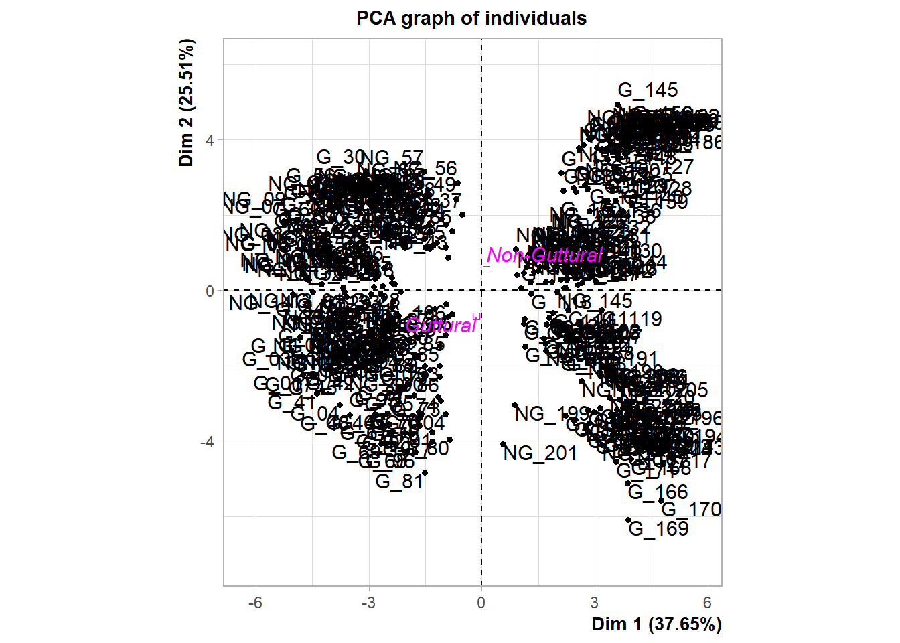
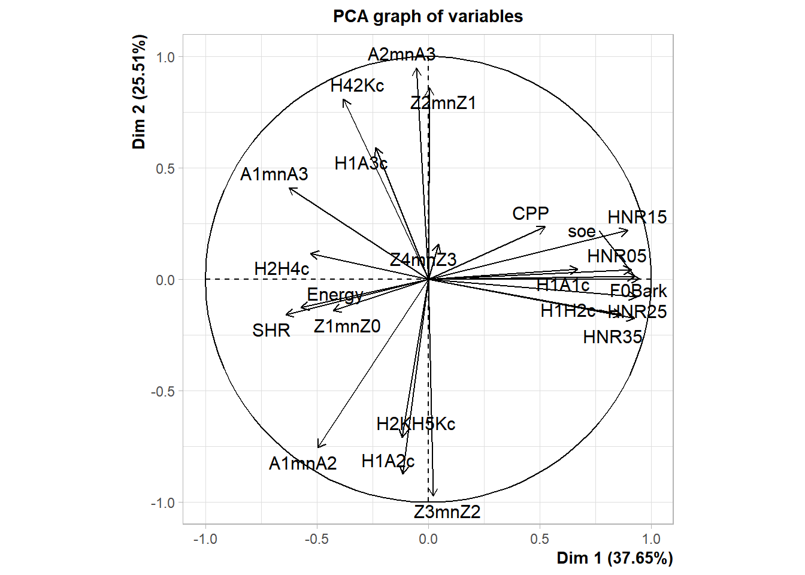
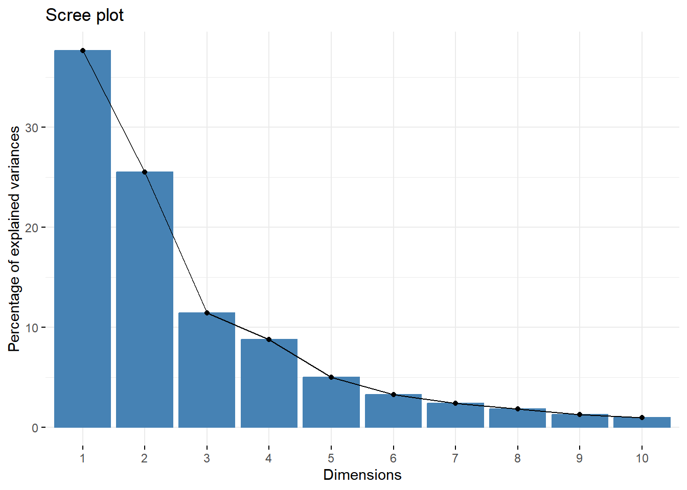
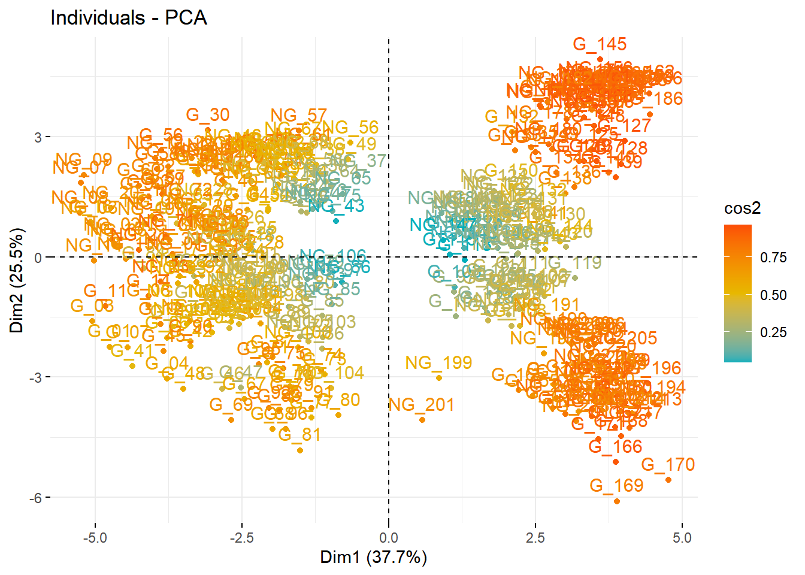
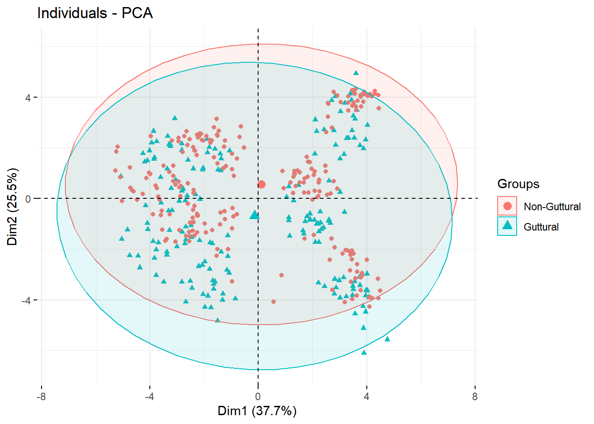
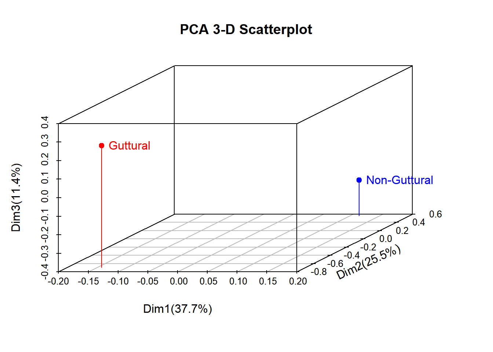

9.6 Principal Component Analyses (PCA)
For this next step, we use PCA to first reduce dimensionality. PCA works by choosing a maximum number of dimensions that is always close to number of predictors - 1. Then you need to make decisions on how many dimensions to retain (usually, those with a variance explained of 5% and above).
The dimensions are all decorrelated from each other.
9.6.1 Model specification
We use the package FactoMineR to run our PCA. We use all acoustic measures as predictors and our qualitative variable as the context.
### below to change maximum overlap for the PCA, Cluster and MDS to draw all information.
options(ggrepel.max.overlaps = Inf)## context CPP Energy H1A1c H1A2c H1A3c
## G_01 Guttural 23.53283 22.753333 15.162000 16.037000000 -3.297166667
## G_02 Guttural 25.71500 22.831167 13.196333 11.624000000 -5.915833333
## G_03 Guttural 19.61600 9.157167 16.547667 18.548833330 0.603666667
## G_04 Guttural 23.59050 17.183000 15.999167 20.108000000 -7.629833333
## G_05 Guttural 26.01967 15.581667 14.545167 14.597000000 -6.729000000
## G_06 Guttural 24.52800 14.442500 16.604833 16.568000000 -5.458833333
## G_07 Guttural 23.05033 18.636167 14.983167 15.770666670 -5.939333333
## G_08 Guttural 22.23483 9.035333 17.085000 18.395500000 2.102500000
## G_09 Guttural 28.40900 25.507667 12.531167 15.144500000 -3.332666667
## G_10 Guttural 28.20017 15.784833 14.676833 16.255166670 -0.052833333
## G_11 Guttural 21.94183 8.381167 15.327667 18.298333330 3.297166667
## G_12 Guttural 25.25917 16.427000 14.621500 17.851666670 2.645833333
## G_13 Guttural 26.77417 14.131167 13.043833 16.166000000 -0.003833333
## G_14 Guttural 23.54400 9.209167 15.923000 18.273333330 6.712333333
## G_15 Guttural 26.10400 13.204667 17.032167 15.247833330 9.653666667
## G_16 Guttural 24.04650 17.796833 15.422000 15.311833330 12.995166670
## G_17 Guttural 26.85900 16.828833 16.779167 16.698666670 7.156833333
## G_18 Guttural 28.38967 12.386833 17.686167 18.283500000 9.034500000
## G_19 Guttural 27.74700 12.045167 17.961167 18.893000000 10.526833330
## G_20 Guttural 27.72100 17.095500 18.564333 17.503000000 4.353333333
## G_21 Guttural 23.99033 9.960667 14.002333 12.434333330 2.048833333
## G_22 Guttural 24.98067 6.865000 8.899500 11.032666670 12.913000000
## G_23 Guttural 22.88400 6.956667 8.780000 10.761166670 8.546833333
## G_24 Guttural 27.01567 4.675500 13.081500 8.753833333 4.991166667
## G_25 Guttural 25.42633 5.078000 12.522833 10.404166670 0.702500000
## G_26 Guttural 26.21867 3.023833 15.719167 15.716166670 11.879666670
## G_27 Guttural 26.66750 8.298000 13.625833 17.810333330 -4.839833333
## G_28 Guttural 26.55600 6.984500 12.874333 14.356000000 1.241000000
## G_29 Guttural 24.96783 9.881167 13.538167 17.752666670 5.358833333
## G_30 Guttural 27.32883 8.930000 11.241333 2.697666667 4.946666667
## G_31 Guttural 25.13367 5.666667 11.121500 6.970833333 2.848000000
## G_32 Guttural 22.07817 6.520833 8.810167 6.967666667 4.062166667
## G_33 Guttural 26.69700 8.279500 12.228667 13.083333330 -1.072833333
## G_34 Guttural 27.88283 6.787167 13.108000 9.650333333 3.450000000
## G_35 Guttural 26.94067 9.193333 11.172167 14.366333330 3.103000000
## G_36 Guttural 27.27650 3.635833 12.690667 13.933166670 7.320666667
## G_37 Guttural 27.37950 3.656667 13.509000 10.092166670 3.168833333
## G_38 Guttural 28.56267 3.316500 14.945167 12.151833330 3.007166667
## G_39 Guttural 28.33483 5.217833 11.892333 9.054833333 5.095666667
## G_40 Guttural 27.66750 7.346000 9.847167 9.948166667 4.836000000
## G_41 Guttural 25.61317 21.563333 17.943167 17.311000000 -5.218333333
## G_42 Guttural 22.82933 12.978667 19.184333 19.513666670 -2.856833333
## G_43 Guttural 28.46233 18.690333 13.354833 17.494000000 -2.092666667
## G_44 Guttural 27.53633 17.938833 15.590667 17.878000000 0.717833333
## G_45 Guttural 26.28583 18.138333 15.395333 19.787666670 -0.998666667
## G_46 Guttural 27.73583 23.601500 14.108167 17.988000000 -11.412166670
## G_47 Guttural 29.15950 27.768833 13.659667 15.779833330 -13.058333330
## G_48 Guttural 26.42450 20.406500 13.544000 19.339000000 -10.366833330
## G_49 Guttural 22.49300 7.321333 10.199333 7.541666667 6.772000000
## G_50 Guttural 20.58800 5.425000 10.907167 12.204333330 7.929166667
## G_51 Guttural 25.05133 5.680000 11.139833 8.217166667 9.134833333
## G_52 Guttural 25.03717 6.080167 15.766000 12.472500000 3.111500000
## G_53 Guttural 25.14467 4.166000 13.942167 10.532833330 1.143666667
## G_54 Guttural 25.99167 4.398833 14.709833 11.321166670 7.325500000
## G_55 Guttural 22.66283 4.583500 16.994333 14.973666670 14.764500000
## G_56 Guttural 25.86283 9.218667 11.968667 9.887500000 14.498666670
## G_57 Guttural 22.18800 5.157667 11.693833 17.867833330 10.873833330
## G_58 Guttural 23.18933 5.421833 13.441500 9.072500000 9.077666667
## G_59 Guttural 23.76933 7.711167 7.921000 9.312666667 6.566333333
## G_60 Guttural 22.29067 5.355000 9.188333 11.608833330 10.646833330
## G_61 Guttural 23.01267 2.678000 16.392000 17.616166670 16.699333330
## G_62 Guttural 24.11700 5.343000 10.621833 14.189666670 11.859666670
## G_63 Guttural 22.01067 2.025667 15.925500 18.285666670 11.077500000
## G_64 Guttural 26.24850 6.040667 11.624833 9.844333333 3.392666667
## G_65 Guttural 25.06283 6.673000 11.032500 11.562000000 2.225000000
## G_66 Guttural 25.59783 5.428667 13.105833 14.649500000 0.853000000
## G_67 Guttural 24.43200 14.730667 9.838667 15.995500000 -11.320166670
## G_68 Guttural 24.87883 6.594333 14.814667 20.209000000 -12.519000000
## G_69 Guttural 23.34417 5.670667 10.890000 19.541000000 -9.399166667
## G_70 Guttural 25.03100 7.547833 9.411167 18.249333330 -8.499000000
## G_71 Guttural 24.63283 7.801833 10.389667 18.307500000 -3.549666667
## G_72 Guttural 25.78133 4.463000 9.071167 17.769833330 0.143000000
## G_73 Guttural 27.25283 8.045000 15.270500 18.125500000 -6.345000000
## G_74 Guttural 27.58633 5.666333 14.309833 20.686833330 -3.823166667
## G_75 Guttural 27.05033 7.960333 11.655000 21.683166670 -2.760333333
## G_76 Guttural 26.59033 5.635000 12.240333 18.192000000 -8.439166667
## G_77 Guttural 26.82283 7.020667 11.216833 16.755833330 -13.942666670
## G_78 Guttural 25.81750 3.707333 11.539833 22.186666670 -5.526166667
## G_79 Guttural 25.63967 5.199667 14.509833 21.142333330 -6.692500000
## G_80 Guttural 27.40500 4.955667 12.377167 21.673833330 -10.275333330
## G_81 Guttural 24.10483 3.755833 14.329833 23.011500000 -13.781666670
## G_82 Guttural 22.91500 9.041167 16.315000 20.976333330 17.052333330
## G_83 Guttural 24.41567 4.939667 14.639667 16.479833330 9.291500000
## G_84 Guttural 20.85033 6.846500 9.426667 18.166000000 14.775333330
## G_85 Guttural 26.51383 5.141833 16.210667 19.563000000 9.163833333
## G_86 Guttural 28.48700 8.129500 13.909667 18.695000000 4.915000000
## G_87 Guttural 27.49633 11.095500 11.066000 18.965166670 2.623166667
## G_88 Guttural 26.60300 3.859333 12.750000 18.734833330 2.964333333
## G_89 Guttural 28.35517 5.663833 13.142833 20.205833330 5.908666667
## G_90 Guttural 24.01017 9.212000 7.675833 18.342666670 3.849166667
## G_91 Guttural 24.86500 9.328667 16.676833 18.796166670 -5.148166667
## G_92 Guttural 24.29733 7.416000 11.181500 18.721166670 -2.973833333
## G_93 Guttural 24.55167 5.633333 12.430833 21.572666670 -3.729166667
## G_94 Guttural 24.99883 8.452833 11.895167 19.425500000 4.557666667
## G_95 Guttural 25.90217 5.615500 12.851000 20.409666670 0.866833333
## G_96 Guttural 26.23400 9.991333 11.733167 20.203500000 -9.457500000
## G_97 Guttural 26.13867 6.806833 20.998667 18.378333330 0.313333333
## G_98 Guttural 27.38600 5.236667 28.672500 21.517833330 0.575666667
## G_99 Guttural 25.75283 3.612167 28.303333 22.152500000 -0.441833333
## G_100 Guttural 27.20467 6.145333 23.587000 19.896333330 1.222333333
## G_101 Guttural 27.18767 6.065333 27.910000 20.954666670 -0.226333333
## G_102 Guttural 29.11433 5.454333 25.014667 18.746000000 -2.302000000
## G_103 Guttural 27.74600 9.265500 27.196667 18.352500000 2.391333333
## G_104 Guttural 29.04333 10.276000 27.161333 17.389666670 0.153666667
## G_105 Guttural 28.54333 6.355333 26.386333 18.147833330 0.200500000
## G_106 Guttural 28.92650 7.118333 27.755667 20.951333330 0.485000000
## G_107 Guttural 28.39350 6.915000 27.183333 19.744166670 -1.527166667
## G_108 Guttural 27.63650 5.219167 24.210333 20.059166670 -4.718166667
## G_109 Guttural 27.13883 8.293500 21.782500 18.276000000 -3.633333333
## G_110 Guttural 27.20000 6.996500 22.613000 19.119333330 -2.967000000
## G_111 Guttural 28.48283 4.955500 26.581833 16.566500000 -0.905166667
## G_112 Guttural 27.16667 5.311667 25.751167 21.127000000 -0.440833333
## G_113 Guttural 27.78050 6.481167 21.969500 16.136333330 -9.339333333
## G_114 Guttural 27.51883 4.628667 21.622000 17.061333330 -1.730666667
## G_115 Guttural 28.78117 11.488000 20.661000 14.037166670 2.255333333
## G_116 Guttural 29.75883 11.543167 21.834167 11.480333330 2.040833333
## G_117 Guttural 27.70817 5.026833 23.341000 21.680000000 12.172500000
## G_118 Guttural 29.99617 11.977833 23.714000 17.195666670 7.234000000
## G_119 Guttural 29.31800 5.565500 30.389000 20.958000000 8.696833333
## G_120 Guttural 29.70967 6.476000 28.047833 17.981333330 7.422166667
## G_121 Guttural 29.19167 4.531000 20.010833 17.417833330 -0.644166667
## G_122 Guttural 29.16567 5.088500 18.675000 17.090666670 -0.578833333
## G_123 Guttural 29.25817 3.532667 25.077000 20.899000000 -0.256666667
## G_124 Guttural 27.51300 1.954500 19.826667 6.702333333 8.016166667
## G_125 Guttural 28.21067 1.712833 18.510833 8.113833333 5.061833333
## G_126 Guttural 28.89017 1.696333 18.287000 8.683166667 4.858666667
## G_127 Guttural 28.74817 2.787167 23.458000 6.597333333 4.967166667
## G_128 Guttural 28.85467 2.065000 23.047667 7.919666667 3.693333333
## G_129 Guttural 28.55900 2.284833 20.298833 9.721000000 5.906833333
## G_130 Guttural 28.42800 3.462167 18.266500 2.687833333 7.837166667
## G_131 Guttural 27.93883 3.173167 16.673167 3.005500000 7.494166667
## G_132 Guttural 26.54050 2.722667 16.265000 8.467333333 9.640666667
## G_133 Guttural 26.03267 4.118500 17.761333 4.416500000 5.479666667
## G_134 Guttural 26.75050 2.947667 17.522667 8.031166667 5.038333333
## G_135 Guttural 28.03367 4.334167 16.563333 7.197666667 7.350166667
## G_136 Guttural 27.50933 2.825167 17.234000 10.061833330 3.912166667
## G_137 Guttural 28.73133 2.554167 19.070167 7.857666667 5.418000000
## G_138 Guttural 26.81717 2.843500 16.541667 9.361333333 4.723833333
## G_139 Guttural 27.93033 3.930833 20.689667 6.134666667 2.063833333
## G_140 Guttural 27.12700 3.354833 19.041667 8.477833333 4.233000000
## G_141 Guttural 26.37767 3.903000 17.556667 11.475833330 2.151500000
## G_142 Guttural 26.79417 2.123667 17.404000 1.093833333 9.033333333
## G_143 Guttural 27.01250 3.331500 16.828667 1.100833333 7.705166667
## G_144 Guttural 26.44200 2.561667 16.338833 5.571833333 10.445666670
## G_145 Guttural 27.43783 3.932000 20.204833 -2.183166667 10.569500000
## G_146 Guttural 27.83317 5.359833 18.695333 -2.274833333 5.102333333
## G_147 Guttural 28.15200 5.049333 17.052333 0.099500000 3.848833333
## G_148 Guttural 28.16617 4.152000 18.656000 3.684666667 2.067000000
## G_149 Guttural 26.84067 3.572167 19.216500 5.988000000 2.914333333
## G_150 Guttural 27.29533 4.223167 13.075833 7.876833333 -0.048333333
## G_151 Guttural 28.79867 7.474833 17.082000 12.119000000 -5.820166667
## G_152 Guttural 28.82617 5.985833 19.140167 12.818000000 -7.096500000
## G_153 Guttural 28.21600 5.953500 22.037833 16.060166670 -4.312333333
## G_154 Guttural 25.29433 2.610333 17.426000 21.714500000 -2.174000000
## G_155 Guttural 25.80433 2.730500 16.488833 24.048666670 1.396666667
## G_156 Guttural 26.71683 2.336333 16.908000 24.256833330 -0.904000000
## G_157 Guttural 25.22083 2.230833 22.489167 22.326000000 -2.471666667
## G_158 Guttural 27.27350 2.291333 21.395833 23.041833330 -5.835166667
## G_159 Guttural 26.89467 2.151167 17.759500 21.177666670 -4.733833333
## G_160 Guttural 24.50667 4.273167 17.098500 14.101666670 -6.083666667
## G_161 Guttural 26.66617 4.187667 18.155333 17.709000000 -8.775833333
## G_162 Guttural 25.49150 3.615667 17.888000 16.304833330 -7.775666667
## G_163 Guttural 25.26400 2.276167 19.670667 18.768000000 -4.513500000
## G_164 Guttural 24.87617 1.743833 20.583000 21.293166670 -5.631333333
## G_165 Guttural 24.44167 2.738500 16.652667 21.830166670 -2.822666667
## G_166 Guttural 25.95017 2.234167 21.803000 28.399500000 -8.168000000
## G_167 Guttural 25.61000 1.929167 17.027333 23.403166670 -7.841666667
## G_168 Guttural 25.52633 1.376833 17.885833 21.694166670 -10.498000000
## G_169 Guttural 22.86617 1.549333 25.459333 30.355500000 -10.306000000
## G_170 Guttural 24.96833 2.133667 28.148667 33.134500000 -7.575666667
## G_171 Guttural 24.98583 2.241167 19.849167 24.619000000 -8.219500000
## G_172 Guttural 25.03333 3.259833 15.169333 22.224166670 -0.029666667
## G_173 Guttural 26.84167 3.672333 13.239667 22.428500000 0.418833333
## G_174 Guttural 26.22150 3.168500 13.656833 23.506000000 1.021666667
## G_175 Guttural 26.66167 4.832667 13.699833 17.729833330 -3.052833333
## G_176 Guttural 27.95633 4.337833 14.025500 19.170666670 -3.582000000
## G_177 Guttural 28.05433 4.597667 13.855667 24.859166670 0.232500000
## G_178 Guttural 26.56450 1.582167 18.842000 19.833166670 -0.694333333
## G_179 Guttural 26.72050 1.625333 19.017167 20.388666670 -1.185833333
## G_180 Guttural 27.22317 1.933333 19.026167 21.374000000 -5.453000000
## NG_01 Non-Guttural 24.59917 8.798833 17.511833 18.537000000 8.251500000
## NG_02 Non-Guttural 23.13000 12.160333 14.863667 13.589333330 4.377500000
## NG_03 Non-Guttural 20.25467 6.975000 15.614667 13.732000000 7.873833333
## NG_04 Non-Guttural 22.08517 6.258167 17.595333 18.008333330 12.506833330
## NG_05 Non-Guttural 25.89650 9.108500 15.700000 12.869333330 4.345666667
## NG_06 Non-Guttural 20.51767 5.768167 17.136000 14.129500000 5.224000000
## NG_07 Non-Guttural 22.71750 9.528167 15.418333 13.639000000 16.137000000
## NG_08 Non-Guttural 24.37000 17.032667 13.728000 12.039833330 8.990166667
## NG_09 Non-Guttural 21.89033 11.273000 13.502500 11.021833330 13.024666670
## NG_10 Non-Guttural 26.91467 11.088667 13.866333 10.183166670 11.977833330
## NG_11 Non-Guttural 28.23717 12.617667 13.680000 9.372166667 9.454333333
## NG_12 Non-Guttural 23.68433 7.080667 14.808000 12.232833330 15.105000000
## NG_13 Non-Guttural 20.97900 9.864333 14.807500 15.738833330 5.373500000
## NG_14 Non-Guttural 21.14083 10.610667 12.692500 14.741166670 2.161500000
## NG_15 Non-Guttural 22.30267 15.194833 11.881667 11.928666670 2.484000000
## NG_16 Non-Guttural 25.05967 12.536333 14.516333 12.899666670 7.667000000
## NG_17 Non-Guttural 26.61183 12.127500 12.861667 11.781833330 4.381500000
## NG_18 Non-Guttural 26.61433 10.864833 15.538167 14.123166670 5.650166667
## NG_19 Non-Guttural 23.95433 7.348667 16.878500 18.941000000 13.212833330
## NG_20 Non-Guttural 23.43967 10.969000 14.669500 15.393333330 13.329833330
## NG_21 Non-Guttural 25.63433 10.976333 14.379333 15.244166670 6.611833333
## NG_22 Non-Guttural 24.31100 4.508167 18.376500 22.098166670 6.473666667
## NG_23 Non-Guttural 25.07700 11.535167 12.896667 15.099833330 2.121500000
## NG_24 Non-Guttural 26.55767 5.499167 16.417500 19.490666670 8.199833333
## NG_25 Non-Guttural 27.81867 11.329667 13.512167 15.187500000 5.532000000
## NG_26 Non-Guttural 29.04250 11.006333 13.870833 13.934000000 7.489500000
## NG_27 Non-Guttural 26.82083 6.758833 18.347667 18.028166670 10.856166670
## NG_28 Non-Guttural 22.96883 4.981167 19.396167 16.409833330 14.987000000
## NG_29 Non-Guttural 25.53067 7.686500 15.545333 14.980666670 9.157333333
## NG_30 Non-Guttural 23.66800 6.248167 19.746167 19.210500000 12.740333330
## NG_31 Non-Guttural 26.66717 11.725333 13.139333 13.191833330 5.743500000
## NG_32 Non-Guttural 26.96467 11.060167 12.093667 12.776000000 1.340333333
## NG_33 Non-Guttural 26.62967 8.083667 14.019667 15.490166670 8.850500000
## NG_34 Non-Guttural 24.69067 6.106667 8.592000 8.159000000 1.235000000
## NG_35 Non-Guttural 25.72433 4.574833 7.871167 8.519500000 3.510666667
## NG_36 Non-Guttural 24.11350 3.181833 13.036167 9.018833333 5.903000000
## NG_37 Non-Guttural 30.57733 7.051833 7.373333 6.967666667 -1.704666667
## NG_38 Non-Guttural 27.60683 5.991000 9.562333 5.578333333 0.553166667
## NG_39 Non-Guttural 26.13967 3.363500 11.454500 8.020500000 3.913333333
## NG_40 Non-Guttural 25.15317 2.568333 11.506500 18.011000000 9.935000000
## NG_41 Non-Guttural 26.02500 3.745500 10.390000 11.030666670 7.748166667
## NG_42 Non-Guttural 24.54367 3.234500 11.588167 10.592666670 7.614666667
## NG_43 Non-Guttural 28.41117 8.846833 6.874000 6.418166667 -8.700166667
## NG_44 Non-Guttural 26.49267 6.128000 7.011000 7.993833333 -2.919333333
## NG_45 Non-Guttural 24.41833 3.239500 12.250667 10.178833330 -1.256666667
## NG_46 Non-Guttural 24.16683 6.671667 4.600833 -0.120166667 -1.578000000
## NG_47 Non-Guttural 23.25067 3.877000 8.227667 7.162833333 1.337500000
## NG_48 Non-Guttural 24.27583 4.007333 7.906333 0.568000000 -0.832833333
## NG_49 Non-Guttural 29.32683 5.813833 11.466667 6.207500000 4.961166667
## NG_50 Non-Guttural 25.33917 4.640667 13.811000 8.075333333 8.913333333
## NG_51 Non-Guttural 27.04983 5.339333 13.711167 9.962000000 13.010500000
## NG_52 Non-Guttural 27.32333 6.903167 7.480833 2.701500000 -0.574333333
## NG_53 Non-Guttural 26.63633 4.175333 9.600667 4.290000000 -0.915000000
## NG_54 Non-Guttural 25.47767 3.714333 10.954167 4.741333333 2.323333333
## NG_55 Non-Guttural 25.74400 9.338500 7.704333 3.016666667 0.651833333
## NG_56 Non-Guttural 29.08683 4.812000 10.781000 5.438166667 3.640000000
## NG_57 Non-Guttural 26.24767 3.497500 15.228667 7.074833333 7.253833333
## NG_58 Non-Guttural 27.37167 3.312500 11.466000 6.596000000 1.450166667
## NG_59 Non-Guttural 24.58683 5.653167 11.092667 3.370666667 3.145833333
## NG_60 Non-Guttural 26.87833 2.803500 13.647833 11.181666670 8.717333333
## NG_61 Non-Guttural 27.26067 5.609833 14.263833 6.475000000 5.524000000
## NG_62 Non-Guttural 28.50967 5.737333 10.486667 6.993333333 4.893666667
## NG_63 Non-Guttural 26.56683 6.459833 10.172667 8.224833333 4.001000000
## NG_64 Non-Guttural 27.43500 4.662000 12.668167 7.665500000 -3.137666667
## NG_65 Non-Guttural 29.59383 3.762833 11.574333 7.884666667 -0.846833333
## NG_66 Non-Guttural 26.18617 3.032333 13.792000 11.128500000 6.466500000
## NG_67 Non-Guttural 29.05317 5.169333 10.339667 3.377666667 2.195666667
## NG_68 Non-Guttural 27.09300 3.857667 9.550667 1.066166667 -0.803166667
## NG_69 Non-Guttural 25.29350 2.758833 12.634500 4.015833333 2.710000000
## NG_70 Non-Guttural 28.32850 12.116500 14.467000 10.857000000 3.209500000
## NG_71 Non-Guttural 24.34317 11.691167 13.870167 12.934833330 6.137833333
## NG_72 Non-Guttural 24.46417 10.887333 15.570667 9.909833333 9.255666667
## NG_73 Non-Guttural 26.21267 5.558500 9.049667 8.287333333 -4.446000000
## NG_74 Non-Guttural 25.68183 4.233333 9.545667 9.924833333 -3.244333333
## NG_75 Non-Guttural 26.11433 4.040667 10.458667 9.241666667 -3.926833333
## NG_76 Non-Guttural 24.88983 6.653667 9.065333 16.569166670 6.808666667
## NG_77 Non-Guttural 26.54100 4.709333 11.351833 17.684666670 4.975500000
## NG_78 Non-Guttural 23.95567 5.463833 9.667500 21.250500000 7.528666667
## NG_79 Non-Guttural 26.66633 4.984833 13.144000 18.261166670 6.928333333
## NG_80 Non-Guttural 27.99350 5.713000 12.827833 19.188000000 4.357833333
## NG_81 Non-Guttural 24.71650 3.642000 12.341333 21.527333330 4.998500000
## NG_82 Non-Guttural 25.54133 7.290000 6.780667 12.424000000 1.767000000
## NG_83 Non-Guttural 27.33917 6.197833 8.701333 10.020333330 2.154333333
## NG_84 Non-Guttural 24.67367 5.048667 11.363667 14.783500000 4.100500000
## NG_85 Non-Guttural 29.24217 8.006167 10.012167 16.728333330 3.632000000
## NG_86 Non-Guttural 29.19667 5.913333 9.984000 18.769833330 8.563833333
## NG_87 Non-Guttural 27.56500 4.373167 13.130000 16.932666670 9.411000000
## NG_88 Non-Guttural 23.90683 9.028500 8.854500 14.356000000 4.149666667
## NG_89 Non-Guttural 21.97650 7.788667 9.060333 15.173500000 5.204333333
## NG_90 Non-Guttural 22.54800 5.600167 11.030333 13.218000000 5.301666667
## NG_91 Non-Guttural 26.47433 8.424167 10.604667 16.879500000 6.652500000
## NG_92 Non-Guttural 24.31217 6.381333 11.557667 19.339500000 10.514666670
## NG_93 Non-Guttural 22.62950 5.164500 11.999000 21.930666670 12.044833330
## NG_94 Non-Guttural 26.57400 3.860333 12.367500 18.935166670 8.448333333
## NG_95 Non-Guttural 26.37383 3.078167 10.837167 18.531000000 7.170833333
## NG_96 Non-Guttural 24.28133 3.012833 11.280833 20.740666670 7.536833333
## NG_97 Non-Guttural 28.07583 4.469667 12.426333 19.959000000 7.630833333
## NG_98 Non-Guttural 27.45567 4.830833 11.556333 19.525333330 5.117166667
## NG_99 Non-Guttural 26.49200 3.928667 12.407500 21.715500000 9.161833333
## NG_100 Non-Guttural 24.76000 4.103833 14.863333 19.551000000 3.705666667
## NG_101 Non-Guttural 23.46633 2.912167 13.396667 20.008166670 9.224333333
## NG_102 Non-Guttural 21.59767 5.204333 9.743667 17.351333330 9.034000000
## NG_103 Non-Guttural 26.00817 4.865167 14.285667 17.119333330 4.876833333
## NG_104 Non-Guttural 28.67700 8.260500 10.174500 20.857500000 0.562333333
## NG_105 Non-Guttural 26.31983 5.711500 12.771500 20.098166670 9.439333333
## NG_106 Non-Guttural 26.01033 5.482500 12.953667 15.832333330 10.929500000
## NG_107 Non-Guttural 21.29450 4.366833 12.714333 19.271000000 9.822666667
## NG_108 Non-Guttural 24.55833 4.616500 11.434167 18.651166670 8.548166667
## NG_109 Non-Guttural 24.81783 4.556167 10.784833 16.790000000 7.157000000
## NG_110 Non-Guttural 26.30900 4.567167 11.697833 16.128833330 7.021166667
## NG_111 Non-Guttural 25.04217 3.580500 10.637000 17.855333330 12.307833330
## NG_112 Non-Guttural 24.37050 3.520000 13.082333 19.830000000 9.381333333
## NG_113 Non-Guttural 25.22233 4.120333 11.978167 18.515666670 6.480333333
## NG_114 Non-Guttural 24.92917 3.264500 11.562500 22.429833330 12.487000000
## NG_115 Non-Guttural 27.99350 6.895500 20.417167 12.701333330 5.435666667
## NG_116 Non-Guttural 28.26583 6.215667 23.833500 12.624833330 3.039166667
## NG_117 Non-Guttural 28.38250 7.515833 20.183167 12.477666670 3.980166667
## NG_118 Non-Guttural 28.70967 13.822667 18.163333 9.525333333 2.062500000
## NG_119 Non-Guttural 28.25850 7.286667 24.426833 13.397500000 5.960833333
## NG_120 Non-Guttural 28.07450 6.862333 16.141333 11.806333330 1.117000000
## NG_121 Non-Guttural 28.47600 7.796500 22.249667 13.511166670 3.364833333
## NG_122 Non-Guttural 29.22017 7.038000 25.526333 13.028000000 6.248000000
## NG_123 Non-Guttural 27.98533 4.661500 27.643833 15.265500000 7.203666667
## NG_124 Non-Guttural 28.51350 9.756167 24.920167 12.963000000 6.842333333
## NG_125 Non-Guttural 27.50600 6.901000 22.562000 15.497000000 5.689833333
## NG_126 Non-Guttural 29.84067 8.606333 19.253333 13.739333330 5.873833333
## NG_127 Non-Guttural 29.60283 13.567333 23.640000 13.932000000 1.803833333
## NG_128 Non-Guttural 27.99817 11.915333 22.530000 10.153666670 1.205333333
## NG_129 Non-Guttural 28.94650 10.542833 23.400667 10.932833330 4.659833333
## NG_130 Non-Guttural 29.67467 9.882667 26.189167 13.164333330 2.516833333
## NG_131 Non-Guttural 29.11733 7.010500 24.920167 14.010666670 6.071333333
## NG_132 Non-Guttural 28.17383 6.522167 26.094833 13.766666670 7.034333333
## NG_133 Non-Guttural 27.62533 5.346500 23.067500 14.845000000 6.985833333
## NG_134 Non-Guttural 28.56600 5.463500 24.854833 14.541000000 5.966500000
## NG_135 Non-Guttural 27.13600 4.307833 25.313000 16.179333330 6.679500000
## NG_136 Non-Guttural 27.21617 7.673000 23.320167 15.512000000 5.498333333
## NG_137 Non-Guttural 28.83483 7.887500 23.693000 15.639166670 5.946500000
## NG_138 Non-Guttural 29.29917 5.879500 22.030000 17.278500000 5.016833333
## NG_139 Non-Guttural 28.75233 5.777000 23.782833 16.304833330 3.681166667
## NG_140 Non-Guttural 27.93483 3.282333 25.097333 14.726833330 6.115166667
## NG_141 Non-Guttural 28.63533 7.786000 23.242500 13.084666670 2.763500000
## NG_142 Non-Guttural 28.91217 8.225167 23.134167 11.465833330 0.135166667
## NG_143 Non-Guttural 27.51900 3.839833 25.290167 14.159000000 1.958666667
## NG_144 Non-Guttural 27.89817 3.951500 28.959667 15.145666670 4.723333333
## NG_145 Non-Guttural 26.36933 4.028500 27.868500 20.075333330 7.695166667
## NG_146 Non-Guttural 25.84017 2.847833 27.947667 23.278833330 13.335000000
## NG_147 Non-Guttural 26.99250 3.007000 26.459833 20.809333330 13.371666670
## NG_148 Non-Guttural 29.39050 5.141667 23.422000 19.381833330 6.430166667
## NG_149 Non-Guttural 29.40583 3.672667 25.553167 18.268166670 6.130666667
## NG_150 Non-Guttural 28.38817 3.553667 27.168500 19.247500000 6.381166667
## NG_151 Non-Guttural 28.57833 2.681167 24.477333 -1.199666667 3.323833333
## NG_152 Non-Guttural 28.48317 2.306333 24.009833 -0.652666667 5.383000000
## NG_153 Non-Guttural 27.22167 2.530000 23.262833 1.376333333 3.738000000
## NG_154 Non-Guttural 28.03433 3.382500 21.762333 2.393166667 6.604166667
## NG_155 Non-Guttural 27.74083 2.776333 19.556333 -3.900333333 4.047166667
## NG_156 Non-Guttural 27.78717 2.921333 22.681000 -2.031666667 6.035000000
## NG_157 Non-Guttural 28.87100 2.242333 18.245167 -4.571833333 0.999666667
## NG_158 Non-Guttural 28.09217 1.799667 16.068000 -2.044666667 1.927833333
## NG_159 Non-Guttural 28.66383 1.522167 21.769167 -2.457833333 5.193833333
## NG_160 Non-Guttural 28.53233 2.594667 20.048667 -3.814166667 3.102000000
## NG_161 Non-Guttural 28.18650 2.287167 21.456333 -3.537000000 3.747166667
## NG_162 Non-Guttural 28.47433 2.939833 23.797500 -4.303000000 4.163833333
## NG_163 Non-Guttural 27.81667 3.492500 24.043667 -4.423833333 3.071833333
## NG_164 Non-Guttural 28.83817 2.572500 19.777667 -3.259000000 0.466500000
## NG_165 Non-Guttural 28.70950 2.707333 23.479000 -5.562333333 2.453166667
## NG_166 Non-Guttural 29.01367 3.234000 25.800333 -2.854833333 4.193000000
## NG_167 Non-Guttural 27.67017 3.096833 19.251500 -0.743833333 6.499000000
## NG_168 Non-Guttural 28.29950 2.402333 20.336333 1.563500000 6.349333333
## NG_169 Non-Guttural 27.96150 2.226167 17.938167 -0.005833333 8.148000000
## NG_170 Non-Guttural 28.62467 2.284667 18.381833 -0.562166667 9.538666667
## NG_171 Non-Guttural 25.99083 2.385333 19.202833 2.658666667 9.226500000
## NG_172 Non-Guttural 26.90433 3.723167 23.992167 2.489333333 7.842500000
## NG_173 Non-Guttural 27.02267 2.750833 21.974667 1.670666667 8.358166667
## NG_174 Non-Guttural 27.69683 3.393333 21.480500 -0.759833333 8.288833333
## NG_175 Non-Guttural 25.94333 2.534667 19.072000 -0.647166667 8.988500000
## NG_176 Non-Guttural 25.56083 2.400333 18.203667 1.817500000 7.954166667
## NG_177 Non-Guttural 26.14283 2.092000 18.944833 1.767833333 8.661000000
## NG_178 Non-Guttural 26.50933 3.070000 16.806833 3.801833333 6.878166667
## NG_179 Non-Guttural 26.31267 2.549500 19.620667 9.671666667 5.749000000
## NG_180 Non-Guttural 26.40667 2.933333 19.394667 7.828333333 4.670666667
## NG_181 Non-Guttural 27.26917 3.989333 20.420500 -0.734333333 5.886000000
## NG_182 Non-Guttural 26.98883 2.929833 17.468167 -2.557833333 6.200000000
## NG_183 Non-Guttural 26.57950 2.232833 18.185500 2.195666667 6.999166667
## NG_184 Non-Guttural 28.35300 3.507833 23.464500 -4.969500000 2.247666667
## NG_185 Non-Guttural 28.96467 3.267667 25.120000 -2.784333333 1.891833333
## NG_186 Non-Guttural 28.60633 3.004167 25.523167 -0.392333333 1.382833333
## NG_187 Non-Guttural 25.85483 1.414333 19.703167 22.781500000 4.185333333
## NG_188 Non-Guttural 24.46567 2.094667 17.616000 18.938333330 5.701166667
## NG_189 Non-Guttural 24.66500 2.670500 16.572333 20.039000000 4.347833333
## NG_190 Non-Guttural 25.94650 2.146167 22.827333 22.386000000 2.620000000
## NG_191 Non-Guttural 26.23183 2.153000 19.494500 20.652666670 5.367500000
## NG_192 Non-Guttural 26.40133 2.190333 18.611333 21.538666670 2.826833333
## NG_193 Non-Guttural 25.42800 2.829500 18.750833 19.615833330 0.937166667
## NG_194 Non-Guttural 25.78750 2.564833 20.486000 22.783666670 -1.167500000
## NG_195 Non-Guttural 26.06850 2.072833 17.599000 26.268166670 1.739166667
## NG_196 Non-Guttural 26.70833 2.219667 19.817667 21.233500000 -0.611666667
## NG_197 Non-Guttural 26.14217 1.960500 18.708500 22.517000000 1.619500000
## NG_198 Non-Guttural 25.89067 2.306333 18.135333 22.261833330 2.416833333
## NG_199 Non-Guttural 25.28083 5.347667 9.594000 14.498333330 -6.155166667
## NG_200 Non-Guttural 26.66783 3.441167 12.684500 22.318666670 -3.897500000
## NG_201 Non-Guttural 22.85400 4.402667 12.044667 18.614166670 -7.328833333
## NG_202 Non-Guttural 24.96733 1.990333 20.414167 20.037000000 2.415166667
## NG_203 Non-Guttural 24.37350 2.276500 18.212833 18.028166670 1.737500000
## NG_204 Non-Guttural 25.26600 2.011833 18.469500 19.570666670 2.208833333
## NG_205 Non-Guttural 26.01933 1.395167 19.864167 20.812000000 0.923166667
## NG_206 Non-Guttural 25.60267 1.267333 18.797667 20.973666670 2.837333333
## NG_207 Non-Guttural 25.52617 1.125000 18.374833 21.562000000 2.748333333
## NG_208 Non-Guttural 24.82533 1.930667 24.332000 24.497500000 0.170666667
## NG_209 Non-Guttural 25.79067 1.972500 18.954167 20.797333330 1.173500000
## NG_210 Non-Guttural 25.24283 1.700333 19.848667 22.543000000 0.491166667
## NG_211 Non-Guttural 26.05367 3.067500 18.325333 16.820166670 -7.218833333
## NG_212 Non-Guttural 24.88783 2.690500 17.581667 16.932500000 -6.940833333
## NG_213 Non-Guttural 26.56817 2.170667 17.248167 17.918500000 -6.753666667
## NG_214 Non-Guttural 23.99233 2.611667 20.132000 21.252333330 -2.294000000
## NG_215 Non-Guttural 26.41600 2.674167 16.168167 18.886166670 -2.857000000
## NG_216 Non-Guttural 26.05833 2.737500 16.789333 23.457000000 -2.058333333
## NG_217 Non-Guttural 26.38767 3.266000 20.510000 25.062666670 -2.362500000
## NG_218 Non-Guttural 24.97550 2.364833 18.243333 25.526333330 0.438166667
## NG_219 Non-Guttural 26.48550 2.700000 17.667667 23.418333330 -0.697000000
## NG_220 Non-Guttural 26.27800 1.507167 19.620500 20.746166670 0.351666667
## NG_221 Non-Guttural 25.99100 1.527500 18.546167 21.585000000 -0.049500000
## NG_222 Non-Guttural 26.33833 1.709000 17.267333 22.033000000 -3.079666667
## H1H2c H2H4c H2KH5Kc H42Kc HNR05 HNR15
## G_01 -1.18416667 2.646500000 23.242000 -0.793333333 15.081833 10.991667
## G_02 -0.73916667 1.649500000 16.466167 3.222000000 27.608000 23.177167
## G_03 -0.92833333 4.496000000 18.535167 3.877333333 8.078333 4.946667
## G_04 0.78233333 2.416666667 28.222000 1.851500000 18.364667 16.286667
## G_05 0.04416667 3.128000000 27.623667 3.150166667 25.314667 23.038333
## G_06 1.33850000 4.508333333 21.648000 2.889000000 15.229000 12.943500
## G_07 -0.21083333 2.114666667 26.275167 2.230166667 18.705167 13.381500
## G_08 -0.74216667 3.409166667 19.069833 6.570833333 19.000833 14.642333
## G_09 -1.58850000 3.803500000 25.612167 -2.147000000 25.133000 21.514167
## G_10 0.10800000 3.495166667 22.450667 1.006833333 29.377333 27.227500
## G_11 -2.28566667 6.676666667 25.583500 2.382166667 13.044500 10.373333
## G_12 -0.72083333 2.354166667 26.109833 2.104833333 22.369167 19.375000
## G_13 -0.93916667 0.855666667 23.298500 4.388833333 30.040167 27.740667
## G_14 -0.81583333 4.024000000 22.908667 4.246166667 18.146667 15.285833
## G_15 0.13466667 1.533000000 9.446167 8.176833333 30.858500 23.636667
## G_16 0.32883333 2.162333333 7.853833 6.394666667 22.934833 14.947167
## G_17 0.15000000 3.510666667 18.126667 4.436666667 31.771667 24.604333
## G_18 1.34600000 0.380000000 14.560833 6.695000000 41.344333 34.428000
## G_19 1.35650000 0.773000000 14.487000 8.992666667 36.555167 29.431500
## G_20 1.88850000 1.764000000 15.787667 5.808333333 33.220167 24.685000
## G_21 -1.53983333 9.407000000 17.734833 -1.510000000 19.289167 25.596833
## G_22 -1.30966667 7.541000000 20.151167 5.995000000 20.163667 32.468667
## G_23 -0.99216667 8.422166667 18.943667 1.456500000 14.747500 24.922833
## G_24 -1.62950000 6.630166667 29.659500 4.942000000 25.472667 37.835667
## G_25 -0.95983333 6.461500000 24.654833 3.320833333 27.929500 39.540333
## G_26 0.96133333 6.848500000 16.891667 14.400333330 26.768167 42.110333
## G_27 0.64116667 7.724333333 25.404500 -1.966000000 23.463333 28.652000
## G_28 4.16483333 4.266166667 24.679333 -0.616500000 25.358667 33.115833
## G_29 4.15050000 4.842666667 19.507667 0.002333333 21.651333 26.942833
## G_30 -3.29816667 6.234000000 14.792833 8.148333333 18.054500 31.620500
## G_31 -1.61550000 6.831166667 19.268000 4.645166667 19.870833 34.420667
## G_32 -2.07916667 8.373166667 16.455500 1.597833333 12.946667 26.473167
## G_33 -0.91216667 9.821000000 21.286167 -2.994500000 22.047500 29.767667
## G_34 -0.53366667 9.213833333 22.791667 -1.418500000 27.841000 37.719333
## G_35 2.32316667 7.363333333 23.656667 -2.794000000 22.802500 30.996833
## G_36 1.21600000 4.962666667 11.007000 7.730833333 30.751000 42.490667
## G_37 1.57983333 5.676166667 18.381000 2.868833333 28.251333 41.015333
## G_38 1.66850000 5.854166667 11.934667 10.191166670 30.979667 42.739833
## G_39 -1.32750000 7.417666667 23.661833 3.161500000 25.766333 38.381333
## G_40 -0.50850000 6.803500000 24.099000 3.757833333 24.320667 35.506000
## G_41 1.71116667 1.098833333 25.801667 -3.272500000 10.872000 7.294333
## G_42 3.46000000 1.610833333 24.747833 2.365166667 18.012167 15.303000
## G_43 1.81700000 0.641333333 20.969000 0.253833333 27.936333 26.423000
## G_44 1.88566667 2.908333333 24.767000 0.857833333 28.927833 27.560333
## G_45 -0.56616667 3.987333333 28.371167 0.392833333 16.636167 16.489333
## G_46 0.41516667 0.250333333 23.805500 -0.323833333 28.239167 25.165167
## G_47 -0.20866667 0.709500000 21.908500 -1.577333333 26.589833 25.204000
## G_48 -1.94350000 4.148166667 21.284167 -2.804500000 21.094500 18.528667
## G_49 -2.12666667 4.515000000 25.409833 8.397666667 14.509333 27.408333
## G_50 -2.53250000 7.553000000 21.685167 5.763166667 13.764333 26.679500
## G_51 -1.15600000 8.275166667 26.529833 4.101666667 21.167167 35.808667
## G_52 -0.76200000 7.462166667 25.199167 3.609500000 21.327167 32.838667
## G_53 0.31216667 6.108500000 23.591333 1.899166667 24.340000 38.123167
## G_54 0.52400000 5.827166667 22.172333 6.007833333 24.928833 39.817333
## G_55 -0.02133333 6.101500000 21.659333 9.759000000 17.261500 27.762833
## G_56 -0.74516667 10.154333330 21.003833 3.435166667 15.818167 27.509000
## G_57 -0.05383333 9.668000000 12.113333 8.771166667 16.336833 28.923833
## G_58 -1.55766667 4.157666667 22.900000 6.256166667 10.149333 23.104000
## G_59 -1.41083333 8.220833333 21.955667 1.373666667 16.021500 28.118833
## G_60 -2.01433333 6.993500000 24.652333 5.215166667 13.813333 26.774333
## G_61 1.44333333 9.507166667 15.649000 4.515000000 17.511500 29.150167
## G_62 0.34600000 7.577166667 12.809500 7.664166667 22.579333 34.291333
## G_63 2.23900000 8.552166667 14.035333 4.553666667 17.589833 29.497000
## G_64 -1.56700000 8.353166667 29.901500 0.094333333 21.506333 32.424167
## G_65 0.18766667 6.799833333 27.714833 1.433833333 17.508500 28.618833
## G_66 0.66483333 9.062000000 23.913500 2.167166667 20.484000 31.804000
## G_67 -2.32333333 5.856666667 38.441833 -7.817333333 18.200833 25.378667
## G_68 -3.20900000 10.427666670 40.964167 -10.571000000 19.455167 27.402500
## G_69 -3.05216667 9.315000000 40.469667 -10.542833330 18.661500 26.880333
## G_70 -2.96216667 9.617333333 39.893833 -8.393000000 25.907167 32.930000
## G_71 -2.98966667 8.532500000 39.212167 -6.672833333 22.630500 30.729333
## G_72 -0.54316667 6.345333333 40.261000 -6.115833333 28.115500 37.532833
## G_73 -2.18083333 8.794000000 37.151500 -7.079666667 25.751833 33.159667
## G_74 -0.62900000 8.664166667 34.302833 -7.596000000 26.841000 35.174000
## G_75 0.41750000 8.132333333 32.518833 -7.193166667 25.933000 34.408167
## G_76 -3.96116667 9.710666667 40.939167 -9.188500000 24.077667 32.630500
## G_77 -4.02816667 8.677833333 42.453667 -9.796000000 22.419500 31.794667
## G_78 -4.14133333 9.653666667 41.003833 -7.902500000 24.931000 34.358667
## G_79 -2.37316667 10.802500000 38.504333 -10.153166670 24.808500 33.350000
## G_80 -0.89166667 8.501833333 37.469167 -8.952666667 29.397000 39.100167
## G_81 -0.31500000 11.834166670 38.320167 -12.117333330 25.054500 33.821333
## G_82 1.26400000 9.634500000 29.999667 -2.998666667 20.028000 25.717833
## G_83 -1.85516667 7.584000000 36.280167 -3.314166667 22.800833 32.228000
## G_84 -0.04783333 8.228666667 27.662000 -0.290333333 14.147667 24.097000
## G_85 -0.35933333 8.672000000 36.960833 -5.288833333 33.441667 39.245000
## G_86 -0.70983333 9.918500000 37.840167 -11.356166670 34.381167 41.386000
## G_87 0.57466667 2.815833333 37.412667 -6.311000000 28.545000 34.902500
## G_88 -4.21000000 7.868500000 38.553500 -3.237500000 30.678667 39.132000
## G_89 -1.91283333 12.288833330 36.759500 -9.074333333 30.800500 38.442500
## G_90 -1.62350000 7.742833333 36.547667 -8.678833333 20.647333 28.786667
## G_91 2.56883333 8.450000000 39.803167 -12.593333330 21.940333 30.218000
## G_92 1.05983333 8.667833333 39.738167 -15.177666670 20.814167 31.856333
## G_93 -0.15816667 11.390166670 33.315500 -14.854833330 22.478667 33.274000
## G_94 -2.13066667 7.548166667 37.104167 -4.832666667 25.099833 33.248667
## G_95 -1.83600000 11.044166670 37.459000 -9.858166667 24.927000 33.283167
## G_96 -1.87583333 10.573166670 41.168500 -13.337666670 26.905333 35.567667
## G_97 8.05683333 2.203666667 12.075333 0.475333333 40.720167 34.466333
## G_98 8.00183333 6.769166667 8.944167 0.237666667 46.412167 39.809000
## G_99 8.56250000 4.854833333 10.705167 0.457833333 43.139333 37.882000
## G_100 6.99350000 5.529666667 11.777333 0.802000000 47.705500 40.944000
## G_101 7.52266667 4.720000000 11.677167 1.240333333 47.952667 42.472833
## G_102 7.27116667 4.497833333 7.567333 0.957500000 48.646167 43.077167
## G_103 5.17283333 12.772000000 3.755167 -6.587833333 42.972333 34.501833
## G_104 4.79600000 12.006833330 5.626167 -7.396666667 50.112833 42.512167
## G_105 3.60716667 11.078500000 7.569000 -4.447166667 47.556333 39.648833
## G_106 7.75400000 5.249666667 10.673000 1.576500000 48.944500 43.248833
## G_107 7.20133333 7.836833333 7.993000 -1.120000000 49.946333 44.167667
## G_108 5.22466667 6.592833333 16.762667 -1.818833333 47.087667 41.767667
## G_109 4.71783333 8.870833333 12.938333 -3.182666667 45.388500 36.777167
## G_110 5.66716667 7.752000000 9.469833 -0.301833333 47.307333 39.229333
## G_111 7.72616667 4.608333333 15.139667 1.479333333 44.080333 38.875833
## G_112 8.25166667 4.329166667 9.326833 -0.962500000 44.879667 41.209000
## G_113 4.54966667 6.644500000 13.924333 -2.710166667 45.797167 40.511167
## G_114 5.11883333 4.528166667 7.609833 1.767666667 46.590167 41.075667
## G_115 4.38833333 9.904833333 6.984500 -2.992666667 50.583500 42.030000
## G_116 4.29616667 9.374666667 2.412000 -2.943500000 54.000000 45.133500
## G_117 8.08200000 8.998833333 7.002667 0.562000000 49.946333 43.403500
## G_118 8.81516667 12.992833330 6.779833 -7.192833333 53.332833 45.244333
## G_119 12.11566667 14.288000000 13.252833 -11.265833330 54.413333 48.013000
## G_120 10.74683333 8.121500000 8.191667 -2.675500000 52.372833 45.415500
## G_121 4.35483333 5.251000000 16.967000 1.411833333 47.869667 39.799833
## G_122 4.06116667 4.019500000 18.392833 3.099166667 49.494167 40.252333
## G_123 4.94550000 11.026000000 13.356167 -1.490333333 50.785333 43.569000
## G_124 9.17733333 2.479833333 5.751167 2.421000000 46.605000 54.537333
## G_125 10.72600000 -0.581000000 3.799500 4.279833333 44.398167 51.739500
## G_126 10.62283333 -0.260333333 12.116000 4.104333333 44.656833 51.234167
## G_127 8.15983333 2.916000000 9.090833 1.785000000 48.638500 55.403167
## G_128 8.60766667 2.318500000 18.465000 2.424333333 48.233167 54.171333
## G_129 9.48750000 2.029000000 14.808667 3.513500000 46.040000 53.153833
## G_130 10.44066667 0.900000000 8.720833 3.609500000 46.165000 53.358833
## G_131 11.95300000 -1.376666667 11.318833 3.442333333 46.050333 51.741833
## G_132 11.57083333 -0.006666667 6.466167 7.064500000 44.625833 52.033333
## G_133 9.51000000 0.060333333 15.690833 1.426333333 39.260000 44.418833
## G_134 9.67650000 0.248666667 14.652500 1.139333333 44.167833 49.363833
## G_135 11.28683333 -0.110166667 11.742833 3.048000000 44.993667 52.918500
## G_136 11.30000000 -1.834000000 14.601667 3.104833333 45.180000 50.524500
## G_137 10.25050000 0.733666667 16.275667 1.612500000 47.146500 52.551000
## G_138 11.54950000 -0.167166667 20.130333 0.339833333 47.181167 51.698833
## G_139 10.57650000 -0.395500000 17.671833 -0.965333333 47.988500 52.156833
## G_140 11.51933333 -2.000500000 10.813500 0.890166667 50.270167 54.121167
## G_141 11.42633333 0.446833333 17.004500 -2.573500000 44.748333 49.057667
## G_142 12.13933333 -4.503333333 10.277167 6.139166667 43.973500 49.361167
## G_143 13.29000000 -6.153000000 2.106333 8.443000000 44.468833 51.041833
## G_144 12.15600000 -3.235333333 2.734667 8.674666667 44.286333 49.083833
## G_145 9.03083333 -0.389500000 8.581833 6.877666667 46.608333 54.905667
## G_146 12.81500000 -3.542000000 11.725833 3.357666667 44.803000 50.747667
## G_147 14.51333333 -5.634666667 7.775500 4.669000000 46.125333 51.913000
## G_148 10.44250000 -3.205833333 6.504667 7.353666667 44.567833 50.883167
## G_149 10.42483333 -1.939166667 7.720500 6.323166667 38.284500 45.052000
## G_150 11.20566667 -5.187666667 8.521667 5.793000000 38.945500 43.645333
## G_151 2.37200000 7.775833333 12.461000 -2.712333333 52.985333 44.411500
## G_152 4.23133333 8.336500000 10.835000 -4.455500000 49.924333 42.770500
## G_153 5.82183333 5.653166667 13.811167 -0.456333333 49.547333 42.005500
## G_154 15.10400000 -1.307333333 35.627000 -17.099333330 42.466167 45.852500
## G_155 12.69550000 1.930833333 35.650667 -15.007666670 43.311500 45.998500
## G_156 13.54983333 0.604333333 35.586833 -14.951500000 44.303333 47.227833
## G_157 13.77350000 -3.722833333 35.671500 -11.030833330 43.755500 47.696833
## G_158 10.13400000 6.047500000 32.400000 -12.466666670 41.985333 46.804333
## G_159 12.46000000 3.079500000 29.425167 -13.807666670 44.074667 48.102333
## G_160 13.81083333 -7.966666667 36.470667 -12.342500000 40.977167 44.513833
## G_161 16.50166667 -8.722333333 33.183500 -11.698000000 39.334833 43.377667
## G_162 15.82650000 -8.769166667 37.575667 -12.936333330 40.299500 44.020667
## G_163 12.05150000 -2.102666667 38.744167 -12.970500000 41.110167 44.902667
## G_164 12.15433333 -0.623833333 35.189833 -13.060166670 39.400500 44.558667
## G_165 11.50850000 1.170666667 32.085000 -12.925333330 42.302167 45.440833
## G_166 15.92433333 -0.985000000 35.915833 -14.449500000 43.080833 46.392667
## G_167 15.27333333 0.715500000 33.895667 -15.212166670 44.886833 48.776500
## G_168 15.55500000 -1.819666667 35.961000 -14.474833330 44.148333 46.820000
## G_169 18.28966667 -8.131000000 40.589500 -14.086166670 39.706833 44.090167
## G_170 17.36383333 -8.207500000 36.652500 -9.405166667 44.650833 49.948167
## G_171 14.21066667 -1.641833333 36.082500 -12.745333330 46.962667 49.435667
## G_172 12.88000000 -2.965833333 33.614333 -12.127500000 43.080333 45.401167
## G_173 12.22083333 1.452166667 32.393667 -15.003166670 45.180667 47.377167
## G_174 12.28600000 2.191833333 32.095500 -14.729500000 44.723667 47.552333
## G_175 13.04966667 -2.758500000 33.702000 -12.774000000 46.678667 46.924333
## G_176 12.80716667 -2.205333333 33.616000 -14.379500000 44.516833 44.212167
## G_177 13.71900000 -0.966000000 35.880333 -17.197666670 51.332833 54.866833
## G_178 11.63900000 -3.134166667 38.328833 -11.225000000 43.146833 49.773833
## G_179 13.92400000 -3.789000000 32.805500 -10.596666670 42.796167 48.775333
## G_180 13.96400000 -2.881833333 32.844667 -11.788333330 42.951000 49.049333
## NG_01 1.03766667 4.587833333 18.800000 4.984333333 23.014667 19.820000
## NG_02 0.20683333 1.806333333 13.575167 8.630500000 15.049000 13.446167
## NG_03 -2.15466667 6.003000000 15.463333 7.860166667 13.301833 11.662833
## NG_04 0.70100000 4.588333333 10.938000 9.417500000 19.720333 19.607333
## NG_05 0.10833333 4.040500000 16.119167 6.563666667 24.107667 25.350000
## NG_06 0.03016667 7.027666667 19.380167 5.119666667 10.877000 12.570833
## NG_07 -0.91083333 5.394333333 16.833000 6.592166667 14.080167 12.785833
## NG_08 -1.04600000 4.041166667 18.454667 5.756333333 14.748333 12.828167
## NG_09 -1.52900000 4.097000000 12.571167 8.348000000 16.255500 15.072833
## NG_10 0.26183333 4.939666667 14.528333 6.480000000 26.770833 29.679500
## NG_11 0.53450000 2.357833333 19.485500 4.337166667 27.613167 30.164167
## NG_12 -0.18483333 5.228500000 15.063000 8.431166667 22.390667 25.571000
## NG_13 -0.86333333 3.485333333 20.536500 9.719333333 23.193667 17.705500
## NG_14 -1.59983333 3.595500000 12.151333 8.064000000 16.598667 13.249333
## NG_15 -3.08716667 4.046500000 10.770667 7.899000000 24.850500 19.585333
## NG_16 -1.05600000 3.814500000 17.241167 7.648500000 24.979833 22.909833
## NG_17 -0.74533333 2.270833333 14.981500 9.571166667 26.693333 25.609333
## NG_18 0.74116667 3.090000000 20.487500 6.792833333 24.990167 25.901333
## NG_19 0.29816667 3.978500000 12.166500 10.342666670 20.273167 19.007500
## NG_20 -0.87733333 4.602500000 13.907000 7.909833333 19.289833 16.696500
## NG_21 -1.17083333 5.574000000 20.522500 3.663833333 18.961500 16.757333
## NG_22 0.86766667 3.850000000 19.075333 10.877166670 21.992000 20.825000
## NG_23 -1.56983333 3.424666667 26.156333 4.817166667 23.226667 20.257500
## NG_24 -0.69766667 5.404000000 25.267500 7.433333333 33.387333 31.636333
## NG_25 0.25133333 1.035000000 21.914167 7.479833333 35.404667 32.773000
## NG_26 -0.04833333 1.148500000 23.867833 8.458500000 34.216333 29.985000
## NG_27 1.37583333 4.040166667 25.262333 4.341000000 33.113333 31.520333
## NG_28 1.75300000 2.905833333 17.567333 7.654833333 31.300333 27.191667
## NG_29 -0.06133333 2.075833333 19.076167 9.366500000 31.946167 29.261333
## NG_30 1.89033333 5.349666667 23.584500 5.885500000 25.405333 21.939667
## NG_31 -0.77150000 3.002500000 22.121333 5.649000000 28.858833 29.506667
## NG_32 -1.49683333 3.552666667 21.148500 5.417666667 21.880500 20.755333
## NG_33 -1.27616667 5.295166667 25.819167 5.303333333 30.497833 30.330333
## NG_34 -4.03316667 6.794500000 21.494500 8.095666667 22.136000 39.012833
## NG_35 -2.34783333 6.065000000 22.029333 9.538500000 23.014667 39.045333
## NG_36 -1.50283333 6.025500000 20.950667 8.638500000 18.679667 35.433167
## NG_37 -2.88383333 8.014166667 19.516000 6.757666667 31.185500 47.490667
## NG_38 -3.21516667 7.421500000 19.719000 4.994333333 27.981667 42.512333
## NG_39 -0.20316667 5.655000000 17.042000 7.889666667 23.017667 40.244667
## NG_40 -1.90150000 5.582166667 15.901833 12.257000000 19.637000 36.833500
## NG_41 -1.55650000 5.542500000 18.438000 9.245000000 23.844500 39.849333
## NG_42 -1.01266667 6.483500000 18.453333 7.676666667 15.896833 32.332000
## NG_43 -4.17283333 9.521333333 22.085833 4.933166667 29.978333 46.438500
## NG_44 -3.07550000 8.331833333 18.751167 2.867666667 26.210667 41.715167
## NG_45 0.47683333 7.387166667 11.088500 6.752000000 23.260167 38.907167
## NG_46 -6.09950000 4.361833333 16.759333 7.042000000 22.186000 36.592333
## NG_47 -1.38350000 4.628000000 18.832833 6.363833333 20.097833 35.673167
## NG_48 -2.85583333 4.805166667 14.934333 4.563333333 22.948500 39.114167
## NG_49 -1.06466667 6.664333333 24.496000 2.008000000 32.031167 44.379833
## NG_50 0.14016667 6.098166667 23.467167 4.982833333 24.294333 38.288500
## NG_51 4.26283333 7.751666667 23.980000 0.813333333 26.426167 39.095833
## NG_52 -2.97900000 5.992500000 20.569500 5.854833333 20.852667 36.347000
## NG_53 -2.06350000 4.226333333 21.297000 9.777000000 19.425833 36.786167
## NG_54 -2.31733333 5.063333333 23.394333 8.241833333 15.237167 33.257000
## NG_55 -3.45316667 7.541166667 19.078000 5.439500000 24.682167 38.759000
## NG_56 -1.14116667 4.466500000 19.642667 7.803166667 28.685000 45.927167
## NG_57 0.26766667 6.368333333 13.624000 9.893666667 26.812500 43.442167
## NG_58 -1.11016667 4.297500000 23.784833 6.197333333 22.321000 39.080167
## NG_59 -2.04033333 6.748166667 19.932500 3.737000000 17.398500 32.003000
## NG_60 0.23183333 10.534666670 18.533000 0.742166667 16.582333 33.375000
## NG_61 -1.66466667 8.570166667 18.390333 4.670166667 28.861833 40.951167
## NG_62 -0.26233333 7.725166667 18.743333 3.312000000 28.803833 43.577167
## NG_63 0.36583333 9.212333333 20.924833 -0.401833333 26.470667 39.387333
## NG_64 -1.82450000 5.458500000 16.680833 8.479833333 26.752333 42.608500
## NG_65 -1.18650000 5.892666667 20.984833 4.972666667 32.300667 49.459167
## NG_66 0.13600000 8.593333333 16.819500 8.260500000 25.922833 42.095333
## NG_67 -3.43000000 5.250000000 20.483833 9.473000000 24.603167 39.238167
## NG_68 -3.19350000 5.035500000 25.831000 6.753500000 25.031167 40.533667
## NG_69 -1.84866667 6.272500000 24.399333 6.540666667 20.254500 35.307000
## NG_70 0.07000000 5.028166667 21.527333 0.848833333 26.010167 26.257500
## NG_71 0.37566667 4.832333333 18.392667 3.513166667 22.094167 22.833500
## NG_72 1.41383333 3.416500000 18.955833 3.570333333 22.851333 24.795167
## NG_73 -1.31833333 6.949833333 17.324333 4.757166667 26.829167 42.199833
## NG_74 0.59833333 6.156000000 17.675000 5.631000000 24.599667 41.283500
## NG_75 0.83883333 7.472000000 17.864000 2.590166667 25.462333 41.547500
## NG_76 -3.00616667 6.626833333 36.300167 -2.117666667 24.892500 32.019333
## NG_77 -3.11516667 7.064666667 34.745500 -1.841666667 23.906667 32.834500
## NG_78 -1.85233333 8.969333333 35.161333 -6.130000000 16.803667 26.958167
## NG_79 -0.93783333 6.761166667 32.249333 -0.625000000 28.473000 35.903000
## NG_80 -0.84783333 5.885833333 34.436333 -1.162000000 28.160000 37.346000
## NG_81 -0.91850000 6.307666667 35.521667 -1.504500000 22.985500 32.422167
## NG_82 -5.76750000 8.029000000 39.941667 -5.919833333 27.660000 37.166500
## NG_83 -4.71600000 7.525666667 40.458000 -5.383666667 29.305333 38.904000
## NG_84 -3.06266667 7.578333333 37.534167 -5.380000000 23.841167 33.468833
## NG_85 -3.19350000 7.475500000 38.893667 -3.814833333 30.927333 40.302667
## NG_86 -1.77683333 5.565000000 35.104333 -0.031666667 32.547500 41.723667
## NG_87 -0.77616667 7.540666667 35.467500 -1.902833333 28.722667 39.413333
## NG_88 -4.25383333 7.335333333 40.156833 -5.909000000 24.259667 32.909167
## NG_89 -3.13866667 8.417333333 39.482667 -8.019333333 20.776833 30.312500
## NG_90 -2.02800000 7.330500000 40.420500 -7.590500000 16.695500 27.748667
## NG_91 -3.67183333 6.255500000 30.644000 1.082000000 27.679000 34.623000
## NG_92 -1.50583333 7.674666667 30.884000 -2.138166667 20.572667 28.020000
## NG_93 -0.88900000 7.091500000 29.805500 0.254833333 18.422667 26.524500
## NG_94 -3.84116667 6.477666667 34.885500 0.661833333 27.061000 35.540167
## NG_95 -3.06800000 5.920000000 35.857667 -1.563000000 27.813167 39.171333
## NG_96 -2.43950000 8.428000000 35.298667 -3.338000000 22.448833 32.184000
## NG_97 -2.01383333 7.384000000 34.776667 -2.359166667 32.320667 40.413333
## NG_98 -2.18583333 8.554166667 35.658000 -4.994500000 29.195667 38.127667
## NG_99 0.21633333 7.168500000 30.666000 -1.255833333 26.361500 35.226833
## NG_100 -1.55050000 8.093166667 39.557000 -7.973333333 24.780500 34.246167
## NG_101 -1.92750000 8.842500000 36.968167 -6.090333333 25.359333 34.556667
## NG_102 -1.65516667 9.405333333 36.859833 -9.195833333 18.714333 28.538000
## NG_103 -2.42250000 9.692333333 41.367500 -10.706666670 27.259167 36.753167
## NG_104 -0.83733333 10.538833330 39.066000 -15.417333330 34.282000 44.209167
## NG_105 1.54650000 10.909833330 39.110667 -11.562833330 32.250167 40.586500
## NG_106 -0.79033333 6.658833333 36.544333 -2.281500000 31.864667 39.693000
## NG_107 -0.95750000 7.114666667 33.859667 -2.805166667 18.166333 26.624167
## NG_108 -1.92516667 8.978500000 34.993667 -5.126166667 25.378333 35.334667
## NG_109 -4.44816667 5.717666667 36.727833 0.933666667 28.686000 36.299333
## NG_110 -3.99733333 8.119333333 34.626333 -1.524833333 28.853833 35.692667
## NG_111 -1.77466667 8.142333333 30.861167 0.723333333 25.004500 33.758167
## NG_112 -1.88983333 6.496666667 36.353167 -0.334666667 23.174000 32.527000
## NG_113 -2.07400000 7.668000000 36.937500 -4.112833333 23.376333 33.425667
## NG_114 -2.02833333 10.702500000 35.328833 -4.194500000 27.603500 36.990833
## NG_115 7.66150000 1.197666667 11.873667 3.744666667 46.498667 40.240833
## NG_116 6.58500000 5.950000000 10.258333 1.402500000 47.857167 44.116000
## NG_117 6.84383333 2.165500000 9.870667 2.767666667 46.959667 41.745333
## NG_118 5.93033333 4.252666667 9.894667 0.980000000 48.517833 42.999667
## NG_119 7.32200000 6.136666667 11.163667 0.609000000 43.719000 40.056833
## NG_120 6.66233333 2.112333333 13.717167 2.355000000 50.688167 46.204500
## NG_121 6.42400000 5.136333333 9.088333 1.917666667 45.707833 40.572667
## NG_122 6.15600000 9.080666667 4.518500 0.323666667 48.193000 43.358167
## NG_123 8.62300000 6.445166667 7.072500 0.901000000 45.232000 40.800667
## NG_124 9.04033333 7.654666667 6.734167 1.027666667 47.421667 45.590667
## NG_125 6.81600000 3.680833333 12.285833 2.599000000 44.437333 42.380333
## NG_126 7.65550000 3.299333333 8.892333 4.648166667 51.155667 47.656667
## NG_127 6.64500000 8.503666667 12.925833 -3.231666667 51.524000 43.297000
## NG_128 3.99933333 7.786500000 8.409333 -3.722000000 44.696000 37.075000
## NG_129 3.03116667 9.476500000 16.576833 -3.833000000 49.213833 40.767167
## NG_130 6.65716667 7.296666667 14.853500 0.465000000 53.904833 49.320667
## NG_131 6.69916667 7.559333333 14.333000 1.630166667 51.974667 48.283167
## NG_132 6.89150000 6.303333333 12.384667 2.846000000 51.409000 47.879000
## NG_133 5.86633333 7.395833333 13.872000 0.074166667 45.795500 40.049667
## NG_134 7.37333333 6.542666667 8.268167 1.645000000 48.126167 43.224333
## NG_135 8.60016667 6.310666667 12.379500 2.468000000 46.783667 41.374333
## NG_136 7.48983333 10.841833330 10.620833 -3.300166667 44.292667 41.622667
## NG_137 7.90116667 6.469833333 9.557833 0.836500000 49.131333 45.301333
## NG_138 9.64316667 1.298000000 12.782000 5.345500000 49.999500 46.790000
## NG_139 5.31350000 10.845166670 3.410333 -2.586833333 47.555167 40.955667
## NG_140 6.55166667 4.531000000 12.009667 1.448333333 50.183667 43.484333
## NG_141 4.82083333 9.065166667 14.953667 -3.511500000 51.242167 43.725000
## NG_142 4.87583333 10.351500000 10.420500 -6.451166667 52.954500 46.347333
## NG_143 7.81216667 5.774500000 8.129333 -2.328666667 48.894500 44.551667
## NG_144 9.56816667 2.323000000 14.119500 1.358666667 48.036500 43.965667
## NG_145 9.43833333 4.354333333 15.305667 1.258000000 46.374333 40.568333
## NG_146 10.73116667 6.220833333 17.264833 2.077166667 47.096333 42.449333
## NG_147 6.79966667 10.011166670 15.909667 1.242333333 46.845667 40.779167
## NG_148 6.13333333 11.177666670 11.078833 -0.877166667 51.495500 46.211833
## NG_149 7.12666667 7.873833333 16.148167 -0.753166667 49.634500 45.398667
## NG_150 9.27016667 5.620666667 12.992333 -0.474500000 49.228167 45.138000
## NG_151 5.45950000 3.793833333 19.614833 3.029666667 44.232667 53.795833
## NG_152 5.50650000 3.429333333 14.570667 3.102166667 45.512000 55.082333
## NG_153 5.25783333 3.717833333 18.685000 4.424000000 44.857667 54.150167
## NG_154 6.97766667 2.278000000 15.998667 4.408000000 46.847833 56.063667
## NG_155 3.29183333 3.213166667 17.808667 3.435666667 47.434667 56.213667
## NG_156 6.12516667 2.808000000 11.857333 3.021500000 46.344000 55.267667
## NG_157 2.19566667 2.419000000 15.384167 4.793500000 48.931000 56.945500
## NG_158 1.78600000 2.449333333 21.912500 5.288666667 46.059833 54.450167
## NG_159 7.26750000 1.590000000 16.917833 3.307833333 49.042667 57.957500
## NG_160 3.46500000 2.551833333 18.616000 3.522333333 48.557833 57.132333
## NG_161 4.30716667 2.590833333 19.438000 3.170166667 47.319500 56.156500
## NG_162 7.08450000 1.920833333 18.555000 2.447833333 48.537833 56.356667
## NG_163 8.64116667 1.765666667 13.772667 1.187666667 45.127667 53.181667
## NG_164 8.67216667 -0.041000000 12.318833 2.486500000 43.235667 51.117500
## NG_165 7.76066667 1.208500000 14.442167 1.533000000 43.387833 51.072500
## NG_166 7.05300000 1.860666667 18.161667 2.545166667 48.470833 55.233833
## NG_167 10.10583333 2.294000000 16.026833 1.171000000 45.628000 52.814833
## NG_168 9.08116667 1.576333333 16.050667 2.781333333 45.913667 52.382667
## NG_169 12.00033333 -2.795333333 18.623500 3.297500000 44.811667 52.155000
## NG_170 11.14216667 -0.045833333 21.096500 1.933500000 47.965500 55.142167
## NG_171 9.39583333 1.984166667 19.208333 4.875666667 41.758500 50.026167
## NG_172 6.25033333 4.357333333 16.745500 3.993000000 49.193500 58.104833
## NG_173 6.16933333 2.789500000 16.295667 4.880166667 47.224667 55.407833
## NG_174 8.17166667 1.764500000 14.384667 2.901000000 47.784167 55.448333
## NG_175 8.13666667 2.333000000 15.898000 3.660333333 42.385000 50.295167
## NG_176 8.51300000 2.941666667 12.940833 4.390666667 42.598000 51.172833
## NG_177 8.71766667 1.643166667 15.877000 4.366166667 44.771833 52.006500
## NG_178 11.73500000 -1.807000000 10.121667 3.911000000 43.461500 48.814833
## NG_179 8.19833333 4.679500000 9.243667 4.632166667 42.643167 50.167167
## NG_180 8.37833333 4.425000000 6.316000 3.806166667 43.237333 51.076500
## NG_181 9.50950000 -0.926000000 7.399167 4.393333333 44.450167 51.595833
## NG_182 12.00216667 -4.039666667 8.940667 3.370000000 43.295167 49.892167
## NG_183 10.72050000 -0.395833333 15.177500 3.734666667 46.657500 52.621333
## NG_184 8.53400000 -2.554833333 16.520000 4.933166667 43.220167 52.092667
## NG_185 6.45833333 1.224333333 11.076833 3.458000000 44.489500 53.545167
## NG_186 7.21850000 -0.113166667 14.961500 5.684000000 45.195167 54.851333
## NG_187 10.00533333 4.851833333 31.166500 -11.089000000 43.525667 48.724833
## NG_188 10.27166667 4.174166667 31.581500 -8.263333333 42.356500 45.503500
## NG_189 10.50283333 3.502333333 27.345000 -8.775000000 39.381333 42.560833
## NG_190 10.17016667 5.239666667 25.999500 -10.199000000 39.295333 42.032833
## NG_191 11.20783333 5.204000000 29.144000 -11.102000000 43.221167 45.868833
## NG_192 11.64933333 3.810500000 32.734667 -12.603000000 45.267000 48.433500
## NG_193 15.58616667 -9.237666667 39.018500 -10.537833330 41.799333 45.439333
## NG_194 17.71333333 -9.563166667 38.262167 -10.827500000 43.433000 48.353833
## NG_195 13.40633333 1.054000000 34.207333 -13.633166670 42.593333 47.568333
## NG_196 13.91150000 -5.925000000 39.062333 -10.193166670 46.155500 52.468833
## NG_197 15.21750000 -3.086000000 36.555167 -13.073166670 44.827833 48.557833
## NG_198 15.37683333 -3.750500000 36.845667 -12.196500000 45.901167 48.957500
## NG_199 0.85633333 2.092833333 31.612833 -11.214833330 33.792667 37.605500
## NG_200 9.65500000 0.492833333 31.857833 -13.204833330 42.102667 46.237667
## NG_201 5.90850000 -0.302000000 37.493000 -13.105166670 28.748667 33.522833
## NG_202 15.35983333 -4.769166667 33.213167 -9.190000000 42.819000 44.657167
## NG_203 14.29500000 -3.534333333 30.466667 -8.795500000 45.021333 46.204833
## NG_204 13.29600000 -1.953333333 32.283000 -9.134333333 43.613167 47.334667
## NG_205 14.43000000 -3.838833333 34.026500 -7.637000000 45.583833 50.567000
## NG_206 13.29600000 -0.111833333 31.591667 -8.195500000 43.351167 48.157167
## NG_207 12.66233333 1.366833333 32.005500 -8.974166667 45.730000 48.167000
## NG_208 14.73400000 -5.578833333 33.194167 -6.390000000 41.644500 46.661000
## NG_209 13.75066667 0.468166667 29.431333 -8.199500000 42.157833 45.697833
## NG_210 13.35000000 0.613833333 29.337667 -7.487000000 43.763167 48.063500
## NG_211 15.61750000 -8.560333333 40.212667 -14.169166670 41.779833 45.874167
## NG_212 14.81783333 -8.396333333 39.620167 -13.320166670 42.738000 46.238833
## NG_213 15.11866667 -8.666166667 39.124000 -13.339833330 45.635667 49.216500
## NG_214 19.15600000 -12.908000000 39.448333 -11.470666670 41.717833 45.727333
## NG_215 15.87583333 -8.476000000 38.533667 -12.799500000 45.592000 48.578167
## NG_216 16.15016667 -5.053500000 36.714500 -13.820500000 43.574500 46.867667
## NG_217 17.35700000 -9.295000000 38.836500 -12.211666670 42.152000 45.714333
## NG_218 16.48600000 -6.788666667 38.670333 -13.268000000 42.432667 48.011167
## NG_219 15.04783333 -5.928833333 37.929167 -12.825833330 45.649167 48.954500
## NG_220 12.48766667 -2.358166667 36.002167 -9.001500000 42.809167 49.376667
## NG_221 13.52300000 -2.439500000 35.781833 -9.728500000 42.997167 46.797833
## NG_222 14.84483333 -1.770666667 33.774833 -10.687166670 42.967333 47.908500
## HNR25 HNR35 SHR soe Z1mnZ0 Z2mnZ1 Z3mnZ2
## G_01 16.98700 16.96567 0.425166667 0.04283333 5.0769740 2.994892 6.3888571
## G_02 28.37033 25.54933 0.358333333 0.04483333 5.1603564 3.709608 5.9400658
## G_03 15.20767 17.18033 0.392833333 0.04216667 4.8277024 3.624215 6.3593622
## G_04 22.52317 19.90650 0.383500000 0.04466667 4.8102218 3.510302 6.2453769
## G_05 28.18867 24.94500 0.420000000 0.04083333 4.7128376 3.895518 5.8240212
## G_06 19.85783 18.14617 0.310333333 0.04983333 4.8477119 3.711640 6.1129897
## G_07 19.21467 17.03400 0.595166667 0.04533333 5.1715126 3.356130 5.8229432
## G_08 21.73733 21.34783 0.478000000 0.04600000 5.1493955 3.430090 6.0811958
## G_09 25.73267 23.86617 0.404833333 0.04183333 4.8308869 3.699086 5.6607290
## G_10 31.59400 29.14750 0.497000000 0.04450000 4.7451953 3.985419 5.4497377
## G_11 18.16667 18.56100 0.423666667 0.03500000 4.5327393 4.086174 5.5487657
## G_12 26.43100 25.35083 0.463833333 0.03750000 5.0926663 2.866768 6.5928698
## G_13 34.19633 32.10367 0.469833333 0.03750000 5.1055697 3.290856 6.1048315
## G_14 23.95250 25.29017 0.505500000 0.04566667 4.9538656 3.377111 6.4624817
## G_15 25.14567 24.63117 0.670666667 0.04533333 6.3324906 3.615676 4.2367641
## G_16 17.68317 18.49967 0.673833333 0.04616667 6.3598328 3.498095 4.3294339
## G_17 26.77767 24.87917 0.637000000 0.05050000 6.5495098 3.336993 4.5088830
## G_18 35.46050 33.09133 0.780333333 0.03866667 6.1609976 3.462780 4.6768477
## G_19 31.43300 30.16067 0.708833333 0.04750000 6.1134547 3.587614 4.6282162
## G_20 26.67733 24.19800 0.787833333 0.05416667 6.3397502 3.318830 4.7786659
## G_21 25.56933 23.64000 0.432666667 0.06833333 3.2964730 7.270944 3.5204182
## G_22 30.64417 29.81333 0.313333333 0.06383333 3.1606773 8.439895 2.2297144
## G_23 23.84483 23.01950 0.295166667 0.05666667 3.2037843 7.896060 2.8983298
## G_24 36.57100 33.11600 0.000000000 0.06550000 2.5701874 8.641231 2.5962623
## G_25 36.77800 31.84817 0.028833333 0.06166667 2.6049001 9.014237 2.6281675
## G_26 39.35700 35.09283 0.442333333 0.06083333 2.8042926 8.916975 2.3537446
## G_27 30.66700 27.89317 0.561166667 0.05550000 3.3403432 6.364206 4.6015049
## G_28 32.61150 29.39833 0.503333333 0.04783333 3.2847840 7.612213 3.2928552
## G_29 28.29850 26.69100 0.445166667 0.05800000 3.3634856 6.785616 3.8890315
## G_30 28.08983 25.34700 0.582333333 0.05983333 2.8644611 9.113537 1.6656031
## G_31 30.54300 25.62867 0.561333333 0.06566667 2.9934459 9.066597 2.0831579
## G_32 23.10150 19.64050 0.309000000 0.05783333 3.0660506 8.955903 1.9721397
## G_33 30.35183 27.80350 0.566000000 0.06450000 3.2652836 7.495166 3.4986339
## G_34 34.76583 30.98083 0.670333333 0.06383333 3.0627057 8.417232 2.6454171
## G_35 31.49417 30.15467 0.519666667 0.06066667 3.2636138 7.435294 3.3404844
## G_36 40.24883 36.76233 0.509333333 0.05383333 3.2224604 9.442807 2.4142453
## G_37 38.95117 34.71550 0.452666667 0.05050000 3.0148261 9.763520 2.2528522
## G_38 41.84617 38.48600 0.459833333 0.04583333 3.1893541 9.486244 2.3580755
## G_39 36.26017 33.01700 0.362500000 0.05800000 2.9979124 9.160826 2.2960242
## G_40 34.20700 31.38600 0.528500000 0.05566667 3.1951419 8.835512 2.2055245
## G_41 13.10000 14.20417 0.425666667 0.04483333 5.2125033 2.925461 6.4119186
## G_42 21.27700 19.15967 0.317000000 0.05016667 5.0462229 3.239174 6.1671875
## G_43 31.97517 29.74567 0.540500000 0.04416667 4.6981006 3.582176 6.1948875
## G_44 33.67633 30.99233 0.576166667 0.04900000 4.7053965 3.595551 6.1894921
## G_45 25.45733 25.37300 0.436833333 0.04816667 4.5702577 3.327929 6.8125327
## G_46 31.01450 28.45250 0.622500000 0.04366667 4.9826374 2.911765 6.9073300
## G_47 32.72017 31.06550 0.363166667 0.04416667 4.9396923 2.573498 7.3924128
## G_48 25.72767 24.88717 0.385833333 0.04566667 4.8158573 3.001630 7.0707679
## G_49 23.74683 20.48917 0.324833333 0.06816667 2.4602072 9.379766 1.7644181
## G_50 25.53950 23.50183 0.427833333 0.05616667 3.0266356 8.532287 2.5075628
## G_51 33.48450 29.89600 0.292833333 0.05200000 2.9542430 8.937275 2.2095858
## G_52 30.53933 26.65450 0.000000000 0.05866667 2.7483863 8.619004 2.4110919
## G_53 34.89433 29.72883 0.000000000 0.05283333 2.5769498 9.318838 2.4760579
## G_54 34.96900 29.84650 0.314666667 0.06250000 2.5200486 9.366285 2.0897794
## G_55 25.79367 24.53000 0.294000000 0.06700000 2.9404870 8.711772 2.3925728
## G_56 25.47433 24.18650 0.426333333 0.06350000 3.2675739 8.776203 1.8823017
## G_57 28.47183 27.07050 0.227500000 0.04950000 3.0538198 9.348495 2.5754981
## G_58 21.10867 20.01300 0.497333333 0.05900000 2.7679206 9.161378 2.0809593
## G_59 26.56867 24.55350 0.258166667 0.04816667 3.1520200 8.520148 2.4732506
## G_60 24.91817 23.74217 0.351333333 0.04900000 3.0371022 8.099955 2.5437344
## G_61 28.28550 27.92467 0.353666667 0.06133333 3.1369731 8.951924 2.3664996
## G_62 31.68683 28.79950 0.422166667 0.06083333 3.3726854 8.823203 2.3183980
## G_63 28.39400 27.34950 0.515500000 0.04933333 3.2688140 8.787928 2.8979056
## G_64 29.86667 26.00367 0.158500000 0.06633333 2.6761732 8.887629 2.4812777
## G_65 27.21250 23.81683 0.351166667 0.06283333 2.8642917 8.818971 2.5356727
## G_66 30.45233 27.02750 0.554000000 0.05100000 3.0171355 8.606499 2.7114482
## G_67 31.84117 27.90417 0.154500000 0.07950000 2.7612634 4.001784 7.1867175
## G_68 33.54767 29.78450 0.353833333 0.07133333 2.9877226 3.676326 7.4468820
## G_69 34.09317 31.41017 0.426666667 0.05850000 3.0548965 3.615603 7.4426045
## G_70 38.73233 34.99950 0.000000000 0.07383333 2.3841637 4.575309 7.0458326
## G_71 36.76900 33.44267 0.000000000 0.06733333 2.4407267 4.729134 6.7760173
## G_72 42.30367 39.39983 0.051166667 0.06166667 2.4398537 4.747153 6.5958299
## G_73 40.29667 37.27200 0.240000000 0.07383333 2.8074794 3.924079 7.3007235
## G_74 42.30600 39.83917 0.308500000 0.05583333 2.9744125 4.148315 6.8727798
## G_75 40.66083 37.42383 0.406500000 0.05800000 3.0919673 4.437519 6.4742605
## G_76 38.74483 34.71400 0.376166667 0.06683333 2.6935324 4.002796 7.2044044
## G_77 38.96517 35.22450 0.267500000 0.07633333 2.6314606 3.650476 7.7428463
## G_78 39.95400 35.98383 0.243166667 0.06883333 2.6538060 4.718448 6.4222738
## G_79 38.81267 34.92033 0.493833333 0.07300000 2.9205004 4.002428 7.1630978
## G_80 45.61350 41.10067 0.427166667 0.05850000 2.9938234 3.927705 7.2589802
## G_81 39.36283 33.88733 0.481666667 0.06216667 2.9556460 3.874443 7.5895833
## G_82 32.30683 34.42283 0.536166667 0.07083333 3.3060910 2.780697 5.9506154
## G_83 38.73833 40.05050 0.689666667 0.05850000 2.9841548 2.804562 6.8267796
## G_84 33.17617 35.96017 0.275833333 0.03650000 3.1453484 3.082827 5.9363381
## G_85 44.58667 43.83417 0.473166667 0.07450000 3.0886732 2.815228 7.0886758
## G_86 47.54450 47.25367 0.714500000 0.06800000 3.4039540 2.455357 7.3885203
## G_87 40.87150 40.00417 0.402166667 0.04083333 3.5742841 2.327568 7.4817391
## G_88 43.95883 42.48950 0.790833333 0.06300000 2.7337009 4.004879 6.3368024
## G_89 43.28650 41.02033 0.619166667 0.06950000 3.1943560 3.869834 6.3089235
## G_90 32.79183 31.89800 0.220333333 0.04466667 3.1851231 3.807183 6.4820623
## G_91 38.50583 35.91967 0.356666667 0.07933333 3.1015335 2.995675 8.1995180
## G_92 40.07833 37.65750 0.502000000 0.07116667 3.1771733 2.764299 8.2374820
## G_93 40.64117 37.74600 0.422333333 0.07016667 3.1759432 2.881235 8.1176804
## G_94 36.72483 35.22350 0.123333333 0.06616667 2.5325217 4.323492 6.2354951
## G_95 38.41183 36.05550 0.485666667 0.05783333 3.1028582 3.507675 6.9326224
## G_96 40.78350 36.84800 0.524833333 0.06650000 3.1573448 3.258852 7.6653074
## G_97 39.87233 39.45600 0.000000000 0.09633333 4.1471760 3.934601 5.3142751
## G_98 44.59733 43.51000 0.000000000 0.10483333 4.6980267 3.413503 5.2633329
## G_99 43.39350 42.74417 0.000000000 0.11133333 4.4447547 3.539618 5.4941772
## G_100 45.95467 45.02983 0.062000000 0.09083333 4.3713447 3.619311 5.6119629
## G_101 47.37217 45.66017 0.061166667 0.10116667 4.3056287 3.595127 5.7826316
## G_102 47.98000 46.73867 0.103333333 0.10550000 4.2016227 3.947819 5.4973576
## G_103 40.05967 39.00617 0.136166667 0.10500000 5.1808655 2.395495 5.5363522
## G_104 48.46333 47.42933 0.199000000 0.11133333 5.0935849 2.424794 5.7745208
## G_105 45.42533 44.96383 0.006166667 0.10866667 5.0060998 2.613306 5.6468638
## G_106 47.68100 45.95283 0.053500000 0.10900000 4.6103123 3.481779 5.3236180
## G_107 48.55583 47.13400 0.000000000 0.10533333 4.7298962 3.454657 5.2477869
## G_108 46.69483 45.63783 0.114333333 0.11033333 4.4431449 3.627272 5.4592358
## G_109 41.34217 39.72917 0.124833333 0.10416667 4.9606731 3.119923 5.3364700
## G_110 44.18783 42.98817 0.057833333 0.10666667 5.0235083 3.104407 5.3431320
## G_111 43.08200 41.46967 0.000000000 0.10866667 4.6286040 3.748219 5.0527577
## G_112 46.53400 45.36217 0.108166667 0.11083333 3.9737753 3.911625 5.6865229
## G_113 46.13850 45.30567 0.087666667 0.09333333 4.2033862 3.759903 5.6476591
## G_114 46.28167 45.53450 0.154500000 0.10216667 4.1781134 3.935637 5.2880737
## G_115 43.61883 42.81383 0.555166667 0.12533333 5.6792542 2.867236 3.9917769
## G_116 46.80167 46.77700 0.717666667 0.11816667 5.6025134 2.980173 3.9128684
## G_117 44.34833 44.42783 0.514833333 0.12350000 5.5842145 3.207325 3.6294794
## G_118 46.29283 45.27067 0.849666667 0.13050000 5.9041556 2.709239 4.1120269
## G_119 48.94000 48.16000 0.000000000 0.13066667 5.7993293 2.847110 4.6105641
## G_120 46.84650 45.90817 0.000000000 0.14066667 5.5548595 3.043525 4.4381596
## G_121 45.24300 44.65550 0.000000000 0.11583333 4.9081348 3.181046 5.3897945
## G_122 45.14500 45.10833 0.000000000 0.11100000 4.8319932 3.470297 5.0009561
## G_123 49.13767 48.89667 0.714166667 0.09683333 5.4021473 2.750773 5.3503147
## G_124 55.01867 51.87883 0.000000000 0.14000000 1.8355109 9.451798 1.7168243
## G_125 53.63600 51.83467 0.018000000 0.12950000 2.0257204 8.696731 2.1891506
## G_126 53.31800 51.48367 0.201500000 0.13066667 2.0124013 8.874019 2.0776223
## G_127 56.38250 53.70633 0.000000000 0.12600000 1.7044124 9.371015 2.0557934
## G_128 55.39500 52.93117 0.000000000 0.12400000 1.7083956 9.101563 2.1899154
## G_129 54.48467 52.26500 0.000000000 0.11316667 1.8503570 9.074863 2.1277377
## G_130 53.69583 49.47800 0.031000000 0.12166667 1.9574199 9.792705 1.2972542
## G_131 52.55617 49.25283 0.247500000 0.13600000 2.1522654 9.481510 1.3237081
## G_132 52.76317 48.93483 0.554333333 0.12516667 2.1218935 9.499593 1.4194095
## G_133 45.80883 42.20500 0.171666667 0.13483333 1.9708001 9.046732 1.9695928
## G_134 51.14250 48.86433 0.162833333 0.14100000 1.9811108 8.533095 2.3055935
## G_135 53.15050 49.91350 0.386166667 0.10650000 2.1268845 9.151521 1.7572808
## G_136 53.20100 51.16750 0.219166667 0.14233333 2.0831019 8.435312 2.5277100
## G_137 53.69267 51.36550 0.000000000 0.13083333 1.9511439 8.843239 2.1591385
## G_138 53.73933 51.76500 0.328500000 0.14316667 2.1253098 8.278176 2.4732520
## G_139 53.86417 51.19800 0.125500000 0.14633333 1.9371474 8.774416 2.2303812
## G_140 55.48467 53.97867 0.000000000 0.11966667 2.0584384 8.318366 2.3769840
## G_141 50.93633 49.37233 0.440666667 0.13233333 2.1093991 7.771314 3.3449137
## G_142 50.13933 45.37867 0.070666667 0.11816667 2.1750568 9.501844 0.9041403
## G_143 51.17000 46.81083 0.000000000 0.14550000 2.3201662 9.142024 1.1317307
## G_144 49.43217 45.80300 0.000000000 0.13683333 2.2462315 9.158021 1.1806250
## G_145 56.44200 51.40500 0.000000000 0.13733333 1.9038513 10.041537 0.7576905
## G_146 51.76183 47.18567 0.000000000 0.12150000 2.2471600 9.551456 1.0180477
## G_147 53.05950 48.78033 0.000000000 0.12383333 2.3258071 9.294897 1.3516416
## G_148 52.55700 48.38433 0.000000000 0.13766667 2.1124974 9.193252 1.5940822
## G_149 46.39767 43.19017 0.000000000 0.13850000 2.0959166 8.836016 1.9522777
## G_150 45.67900 43.23733 0.000000000 0.10583333 2.4357826 8.279763 2.3598171
## G_151 50.46517 49.31800 0.000000000 0.06916667 4.3218352 3.449440 5.3657181
## G_152 48.41850 47.18217 0.000000000 0.07366667 4.1270158 3.639850 5.4776345
## G_153 47.31317 45.74267 0.000000000 0.08300000 4.2787550 3.611364 5.2681384
## G_154 55.91283 56.44950 0.401500000 0.11983333 2.3243072 3.074410 7.8981821
## G_155 55.51267 55.64950 0.603666667 0.13466667 2.1817250 3.736433 7.2187073
## G_156 57.13067 57.10017 0.660833333 0.12700000 2.2092815 3.539713 7.4424237
## G_157 56.57033 56.70783 0.000000000 0.12550000 2.0785878 3.001979 8.3363461
## G_158 56.47133 56.91983 0.000166667 0.10750000 1.9811450 4.130766 7.2914237
## G_159 58.66900 59.48233 0.053500000 0.11233333 2.2545355 3.996170 7.1261821
## G_160 55.23483 55.63517 0.000000000 0.13800000 2.2347601 2.258678 8.7264668
## G_161 53.93567 54.23367 0.000000000 0.13783333 2.3622068 2.279634 8.5608801
## G_162 54.63467 54.85150 0.000000000 0.13266667 2.2984990 2.256700 8.6440025
## G_163 54.20833 55.28883 0.078166667 0.12950000 2.0138744 2.908270 8.3051461
## G_164 53.69150 53.99650 0.000000000 0.12416667 1.9993667 3.199427 8.0045310
## G_165 53.75400 53.25267 0.596500000 0.11616667 1.9448961 4.283554 6.9073416
## G_166 56.52333 55.56817 0.000000000 0.10866667 2.6937723 2.341987 8.2250068
## G_167 58.52983 57.07650 0.001500000 0.12633333 2.3869754 3.422631 7.5014711
## G_168 57.05983 56.37367 0.003500000 0.11583333 2.4065583 3.061156 7.8265137
## G_169 52.47217 50.88367 0.000000000 0.09633333 2.4715710 1.691121 9.1412403
## G_170 58.09883 56.13767 0.000000000 0.11966667 2.8651810 1.840246 8.5255601
## G_171 57.61650 55.80400 0.194666667 0.10116667 2.4362384 3.016756 7.8614966
## G_172 54.71750 55.37333 0.254666667 0.15183333 2.3452239 2.879681 7.3408693
## G_173 56.64100 56.90483 0.300833333 0.14350000 2.4113233 3.166403 6.9487091
## G_174 57.34767 57.51333 0.000000000 0.15066667 2.4148927 3.355972 6.8445550
## G_175 56.00583 55.74483 0.519000000 0.12950000 2.5521858 2.628848 7.4061972
## G_176 54.33217 53.74900 0.509166667 0.14233333 2.5914615 2.592893 7.8529473
## G_177 62.79283 62.15800 0.606666667 0.12150000 2.3961329 2.806123 7.4550275
## G_178 59.60400 60.24483 0.000000000 0.10566667 2.0440434 2.776146 8.0708822
## G_179 59.20850 60.21300 0.000000000 0.12250000 2.1995161 3.037690 7.7909615
## G_180 58.84967 59.25167 0.000000000 0.10766667 2.2155537 2.929687 7.9457907
## NG_01 23.20717 23.06400 0.439833333 0.04783333 5.1072718 4.883329 4.5390166
## NG_02 16.09750 15.95117 0.533166667 0.04250000 4.9673018 5.120887 4.2718709
## NG_03 15.00217 17.37100 0.396166667 0.03833333 4.9498830 5.360154 4.0365238
## NG_04 21.99167 22.34983 0.396166667 0.04866667 4.9030534 5.375521 4.2849275
## NG_05 25.75417 23.19667 0.428166667 0.04900000 4.8017457 5.479287 3.9816422
## NG_06 15.77717 16.32733 0.434666667 0.05633333 4.6436810 5.806624 4.0437974
## NG_07 13.68067 16.03733 0.438833333 0.04200000 4.7846001 5.839026 3.0479395
## NG_08 12.88700 12.91733 0.371833333 0.04083333 4.9712400 5.629345 3.1824170
## NG_09 14.64283 15.44483 0.390166667 0.04266667 4.8533535 5.676638 2.9657375
## NG_10 27.09617 25.21700 0.348500000 0.04650000 4.4414096 6.469292 2.6782682
## NG_11 28.47500 27.38333 0.367166667 0.04833333 4.6100291 6.236503 2.7748606
## NG_12 22.16733 21.48583 0.416833333 0.04766667 4.3144530 6.779068 2.4007507
## NG_13 20.14917 18.74283 0.377833333 0.04000000 5.2431639 4.552913 4.4617675
## NG_14 16.11867 15.05417 0.364666667 0.04300000 5.5399855 4.483817 4.3514602
## NG_15 21.23983 19.30483 0.456000000 0.04016667 5.2903123 4.583682 4.1860654
## NG_16 23.70483 22.74050 0.570833333 0.04050000 4.7714829 5.418060 3.8998992
## NG_17 26.69750 25.49350 0.325166667 0.03583333 4.6759557 5.510376 3.8778807
## NG_18 26.91567 25.45567 0.314000000 0.04600000 4.5902065 5.598966 3.9086645
## NG_19 23.47183 24.50083 0.551166667 0.04416667 5.0333979 5.017629 4.6927357
## NG_20 20.06300 21.51667 0.553333333 0.04633333 5.0124243 5.022236 4.1992685
## NG_21 19.97700 20.21567 0.404166667 0.04150000 4.9376664 5.059406 4.3051057
## NG_22 26.46633 25.22733 0.671333333 0.04266667 4.9365539 4.717692 4.8077562
## NG_23 25.13550 24.21867 0.497000000 0.03983333 4.9934709 4.549977 4.7578140
## NG_24 35.54083 33.31600 0.575000000 0.04033333 4.9245142 4.608434 5.0509611
## NG_25 33.49733 30.93567 0.403000000 0.04333333 4.9307333 5.017945 4.2164840
## NG_26 32.42867 30.74700 0.500166667 0.03983333 4.9642695 4.813312 4.4004441
## NG_27 33.93767 31.42400 0.652000000 0.05166667 4.9120931 4.884950 4.5665380
## NG_28 26.68917 25.51183 0.416833333 0.03383333 5.3867728 4.953433 4.0040003
## NG_29 29.22783 27.09567 0.504500000 0.03000000 5.3578350 4.906479 4.0321134
## NG_30 22.94083 22.09567 0.574000000 0.04200000 5.1744037 5.049544 3.9362257
## NG_31 30.79617 29.37983 0.435000000 0.03766667 5.0430469 5.340703 3.9902389
## NG_32 23.61017 22.90717 0.360333333 0.03733333 5.0506138 5.140577 4.1552303
## NG_33 31.84917 30.73583 0.364666667 0.04850000 4.8846214 5.453649 4.2344609
## NG_34 37.17817 32.54883 0.411166667 0.07733333 2.2021445 10.523793 1.9495983
## NG_35 36.61700 32.48733 0.000000000 0.06683333 2.4545887 10.197809 1.8187502
## NG_36 33.18650 29.24000 0.350833333 0.05583333 2.5381923 10.058316 1.8466442
## NG_37 46.64417 42.52467 0.000000000 0.07050000 2.3260398 10.189192 2.0750204
## NG_38 39.67417 35.06717 0.000000000 0.06366667 2.4060109 10.097208 2.0186262
## NG_39 38.72450 34.88983 0.081166667 0.05283333 2.3973006 10.258644 1.8841743
## NG_40 38.26917 35.42367 0.023500000 0.04783333 2.6771808 10.415633 1.8656856
## NG_41 38.52683 35.17283 0.268833333 0.06283333 2.7097629 9.997910 2.1197044
## NG_42 30.92083 28.09217 0.311833333 0.05700000 2.7454947 10.100097 2.0979593
## NG_43 43.96267 38.48733 0.000000000 0.06683333 2.2782589 10.112167 2.5962229
## NG_44 39.76067 34.85283 0.000000000 0.06733333 2.3676975 10.326669 2.1921658
## NG_45 36.88450 31.91117 0.156666667 0.05566667 2.2980039 10.604817 2.2333386
## NG_46 33.25683 28.80033 0.200500000 0.06583333 2.5007703 10.191861 1.9634423
## NG_47 33.00067 28.98283 0.000000000 0.05816667 2.4743947 10.202779 2.2151341
## NG_48 35.86750 31.39067 0.265500000 0.04450000 2.6280508 10.219938 2.0599187
## NG_49 41.02500 37.64150 0.000000000 0.06433333 2.6813129 9.473837 1.9163032
## NG_50 33.88783 30.21933 0.453833333 0.05550000 2.8141418 9.553650 1.7048231
## NG_51 34.89483 32.27800 0.591000000 0.05133333 3.0036339 9.041533 1.7445188
## NG_52 34.40350 29.81133 0.000000000 0.06966667 2.4326020 10.295797 1.7525112
## NG_53 35.61200 31.13700 0.063833333 0.06116667 2.5021152 10.260309 1.8816718
## NG_54 30.83917 26.26600 0.387166667 0.05666667 2.5608144 10.210469 1.6866013
## NG_55 34.62150 29.15183 0.000000000 0.06950000 2.3801170 10.228874 1.7963304
## NG_56 43.54183 38.63883 0.000000000 0.06216667 2.5720540 10.150831 1.7139605
## NG_57 40.24067 35.32400 0.503666667 0.04933333 2.5868458 10.085554 1.6920212
## NG_58 37.96617 33.56467 0.041166667 0.06350000 2.6833303 10.234924 1.8735422
## NG_59 29.97600 26.05800 0.492500000 0.05883333 3.0370068 9.736686 1.7842645
## NG_60 33.01800 30.26400 0.462333333 0.05366667 2.9739472 9.924883 1.9195406
## NG_61 37.46000 32.64267 0.199000000 0.05983333 3.0221227 9.632036 1.6892665
## NG_62 41.31167 36.77833 0.628333333 0.05550000 3.0653930 9.671438 1.7837818
## NG_63 35.56233 30.02200 0.425333333 0.05516667 3.0673755 9.588399 1.9295386
## NG_64 40.40850 35.08917 0.115000000 0.05450000 2.7534340 10.049463 2.1546577
## NG_65 47.23117 41.98233 0.783666667 0.05816667 2.8707067 9.988809 2.1102671
## NG_66 40.67683 36.69767 0.434500000 0.05150000 2.8318440 10.089467 2.1001025
## NG_67 38.39500 35.25217 0.373000000 0.06383333 2.6487804 10.089779 1.7867172
## NG_68 38.37033 33.64250 0.172000000 0.05266667 2.5749950 10.321240 1.8572750
## NG_69 34.88667 31.43967 0.457833333 0.05400000 2.5447806 10.371089 1.7631455
## NG_70 27.68450 26.11300 0.525166667 0.04516667 4.6556431 5.461284 4.0013407
## NG_71 24.96350 23.65000 0.445000000 0.04000000 4.5871175 5.493303 4.0500172
## NG_72 25.85300 24.72333 0.549000000 0.04333333 4.6043283 5.737289 3.7645572
## NG_73 40.04200 34.72117 0.000000000 0.06050000 2.2486116 10.520630 2.3546763
## NG_74 39.29567 33.90783 0.000000000 0.05833333 2.2529707 10.586045 2.2901966
## NG_75 40.23600 34.92817 0.000000000 0.06366667 2.1390147 10.770724 2.2988707
## NG_76 36.90517 36.29967 0.234000000 0.07500000 2.5020469 4.842487 5.7454217
## NG_77 38.26217 37.52750 0.588166667 0.06333333 2.8395158 4.912454 5.3952589
## NG_78 33.63000 33.54133 0.333000000 0.05683333 2.9855693 4.512571 5.8574517
## NG_79 41.63800 41.66167 0.000000000 0.06683333 2.7828765 5.122410 5.4013878
## NG_80 42.18433 40.07400 0.329333333 0.06316667 2.7343628 5.170374 5.4781634
## NG_81 37.15067 34.84617 0.376500000 0.06316667 2.6898017 5.245606 5.5924052
## NG_82 42.29233 41.41100 0.025000000 0.07783333 2.3267491 3.838378 6.6763855
## NG_83 44.34500 44.05800 0.118166667 0.06333333 2.3376165 3.805110 6.6811447
## NG_84 37.97433 37.39400 0.365333333 0.05733333 2.7679341 3.390827 6.6471818
## NG_85 45.36867 45.27233 0.041166667 0.06766667 2.5670273 4.024050 6.3058723
## NG_86 48.02383 48.52900 0.000000000 0.06716667 2.5822143 4.029840 6.2362328
## NG_87 44.73050 44.86167 0.374500000 0.05983333 2.7834903 3.783549 6.2639759
## NG_88 37.88200 37.50550 0.252333333 0.06800000 2.4614697 3.462976 6.9249614
## NG_89 35.26767 35.31967 0.329666667 0.06383333 2.4223160 3.360774 7.0406780
## NG_90 34.81367 35.44250 0.186666667 0.06533333 2.5516675 3.189761 7.2732168
## NG_91 37.61883 36.71700 0.440333333 0.06916667 2.5380567 5.176229 5.2254831
## NG_92 33.05283 33.85233 0.467833333 0.05733333 2.9658432 4.682130 5.4304615
## NG_93 31.19800 32.39433 0.449333333 0.05966667 2.9414807 4.779389 5.2889245
## NG_94 41.27167 41.58300 0.683833333 0.06133333 2.6511712 4.594987 5.6603828
## NG_95 45.18233 45.01833 0.677000000 0.05216667 2.7990089 4.325039 5.8564313
## NG_96 36.18867 35.49500 0.537000000 0.05650000 2.8922549 4.657450 5.5247110
## NG_97 44.57400 43.47033 0.000000000 0.06766667 2.7061636 4.925288 5.4474517
## NG_98 41.50517 39.24767 0.530000000 0.05800000 2.9780150 4.659673 5.5750201
## NG_99 38.31933 36.80750 0.440166667 0.05450000 2.9176190 5.522427 4.8921685
## NG_100 41.09100 39.14217 0.098500000 0.05366667 2.8827302 3.400624 7.2710850
## NG_101 41.29950 40.88567 0.644833333 0.04550000 2.9477734 3.318770 6.7862183
## NG_102 35.22317 35.76917 0.376666667 0.04883333 3.0549376 3.082813 6.9042957
## NG_103 44.35783 43.54900 0.023666667 0.05766667 2.8588717 2.989296 7.4896390
## NG_104 50.52900 47.90467 0.481333333 0.05916667 3.1948762 2.714041 7.7566981
## NG_105 46.70067 45.06233 0.511166667 0.06066667 3.0501187 3.060661 7.2783335
## NG_106 45.60700 45.86100 0.000000000 0.06916667 2.5898119 3.655201 6.5036413
## NG_107 33.22650 34.77483 0.588833333 0.04550000 2.8627546 3.650003 6.2638987
## NG_108 40.74883 41.06550 0.492000000 0.04266667 2.9729828 3.270902 6.5408018
## NG_109 40.68400 40.68917 0.569166667 0.06700000 2.4691247 4.777112 5.5019358
## NG_110 39.21617 38.85650 0.632666667 0.05300000 2.9370512 4.750507 5.1655295
## NG_111 37.72683 38.30450 0.521000000 0.05433333 3.0062744 4.869741 4.8441508
## NG_112 38.09733 37.47017 0.560500000 0.06733333 2.6184563 4.436655 5.9656435
## NG_113 38.28917 36.87367 0.482333333 0.06033333 2.8366324 4.437636 5.9744862
## NG_114 42.22683 40.97833 0.400833333 0.05733333 2.8593187 4.726925 5.7157802
## NG_115 40.50133 39.30983 0.000000000 0.10150000 4.3033489 4.919535 3.8642721
## NG_116 44.24333 43.61833 0.060166667 0.10400000 4.4375026 4.789153 3.6998449
## NG_117 41.92933 41.05500 0.000000000 0.09666667 4.3732580 4.922343 3.6800755
## NG_118 41.76683 40.60683 0.072833333 0.07433333 4.4770322 5.146057 3.5068913
## NG_119 39.46950 38.50317 0.087666667 0.09433333 4.3865279 5.132684 3.6119892
## NG_120 46.97750 45.86083 0.091833333 0.08000000 4.0821203 5.380407 3.8231143
## NG_121 39.92017 38.74417 0.000000000 0.09050000 4.6186811 4.709929 3.3396363
## NG_122 42.60300 40.98917 0.000000000 0.10450000 4.8625671 4.426222 3.4284442
## NG_123 39.92333 38.24083 0.000000000 0.11166667 4.7615205 4.531642 3.4620240
## NG_124 43.86817 42.28350 0.153833333 0.10233333 4.2740679 5.704640 2.7970442
## NG_125 42.47450 41.43817 0.159333333 0.09066667 4.1181532 5.563518 2.9877293
## NG_126 46.23083 45.34467 0.103333333 0.10150000 4.2479170 5.496926 3.0062994
## NG_127 44.74700 43.68700 0.007000000 0.13466667 5.3344195 3.409150 4.0437828
## NG_128 38.54750 37.75233 0.013000000 0.13333333 5.0577964 3.574862 4.1623357
## NG_129 41.83233 41.10550 0.000500000 0.13250000 5.1995602 3.434839 4.0317722
## NG_130 49.36283 47.53667 0.063666667 0.11483333 4.8679066 4.480096 3.6139252
## NG_131 48.43183 47.03867 0.053833333 0.11650000 4.6340672 4.623153 3.4472375
## NG_132 48.02267 46.55400 0.000000000 0.10850000 4.5078101 4.803345 3.5075073
## NG_133 40.23633 39.17600 0.126666667 0.11533333 5.0398265 4.320974 3.4749538
## NG_134 43.39283 42.11683 0.031000000 0.11633333 4.9581758 4.417886 3.6598751
## NG_135 40.83667 39.38400 0.000000000 0.10750000 4.9365908 4.430293 3.7342045
## NG_136 40.74083 39.10300 0.097166667 0.10516667 4.6060414 4.914471 3.4680444
## NG_137 45.22500 44.01833 0.105166667 0.09350000 4.6376514 4.859146 3.6077253
## NG_138 46.87967 46.42700 0.097666667 0.09800000 4.2167035 5.204776 3.4714974
## NG_139 43.75800 42.67133 0.064000000 0.11066667 5.3123889 3.246526 4.3991626
## NG_140 45.78417 45.41900 0.125666667 0.10450000 4.8430421 3.761844 4.3373525
## NG_141 46.74583 45.89683 0.048833333 0.12950000 5.3306031 3.208514 4.4985412
## NG_142 48.49483 47.07917 0.000000000 0.11650000 5.0002338 3.604426 4.3559981
## NG_143 46.61750 45.17917 0.000000000 0.11216667 4.4768354 4.189826 4.5927507
## NG_144 46.77417 45.43200 0.000000000 0.10533333 4.4163470 4.093462 4.7149165
## NG_145 42.15767 40.78017 0.048666667 0.11900000 5.0473859 3.575458 4.3473368
## NG_146 43.39083 41.71867 0.000000000 0.12200000 5.1509291 3.731123 4.1131474
## NG_147 42.66033 42.37167 0.568833333 0.12016667 5.4724468 3.290230 4.0657171
## NG_148 46.64350 45.23700 0.467666667 0.08433333 5.4636493 4.116633 3.4589071
## NG_149 45.77750 44.24567 0.000000000 0.08200000 5.0754225 4.109765 3.6759149
## NG_150 45.79017 44.84933 0.000000000 0.07333333 4.8575429 4.376224 3.6133916
## NG_151 55.68950 49.64650 0.000000000 0.12983333 1.3475635 10.952655 1.2215279
## NG_152 57.02300 51.81950 0.000000000 0.13933333 1.4151242 10.683543 1.3271105
## NG_153 56.12283 50.68683 0.000000000 0.13016667 1.3199700 10.789858 1.4067409
## NG_154 58.72300 53.89650 0.000000000 0.10333333 1.2537962 11.014438 1.3013234
## NG_155 58.32950 53.58400 0.000000000 0.11333333 1.0536793 11.011347 1.4153910
## NG_156 56.71383 52.70050 0.000000000 0.10116667 1.3953634 10.577241 1.2662643
## NG_157 60.65583 56.03833 0.000000000 0.12100000 0.9951724 11.173061 1.3308285
## NG_158 58.41333 53.49083 0.000000000 0.14300000 0.9328505 11.290494 1.3651446
## NG_159 61.42750 56.10933 0.000000000 0.12050000 1.5974903 10.884375 1.1674524
## NG_160 60.31267 55.05400 0.000000000 0.10366667 1.1119047 11.157316 1.2878258
## NG_161 59.42367 54.49983 0.000000000 0.11150000 1.2503518 11.067571 1.1021984
## NG_162 59.05700 54.21583 0.000000000 0.11916667 1.5656239 10.673140 1.0246605
## NG_163 55.41150 49.75267 0.014166667 0.13500000 1.6660793 10.679331 1.1260418
## NG_164 53.74233 48.91250 0.028000000 0.13850000 1.9561760 10.293090 1.4220225
## NG_165 53.40500 48.51317 0.015333333 0.11950000 1.6604035 10.459568 1.2357814
## NG_166 56.76000 52.13267 0.000000000 0.12833333 1.6076263 10.346550 1.2081548
## NG_167 53.06750 47.96150 0.000000000 0.12933333 1.9319740 10.016826 1.2719717
## NG_168 53.86100 50.00183 0.000000000 0.13783333 1.8589219 10.061588 1.2867123
## NG_169 53.30267 49.66433 0.000000000 0.13683333 2.0773268 9.758868 1.2297906
## NG_170 55.44417 51.41117 0.000000000 0.14433333 2.0401238 9.897463 1.1127797
## NG_171 50.18100 46.13333 0.000000000 0.12816667 1.8071730 10.008634 1.1621808
## NG_172 59.15583 54.48950 0.000000000 0.10983333 1.3918525 10.536836 1.2902333
## NG_173 55.94650 52.22967 0.000000000 0.11250000 1.4615480 10.345628 1.2936445
## NG_174 55.87283 51.81783 0.000000000 0.10466667 1.6695912 10.248948 1.1581508
## NG_175 51.33167 46.20700 0.000000000 0.13566667 1.8281953 10.130319 0.8731840
## NG_176 52.33600 47.29183 0.000000000 0.11933333 1.8743395 10.002046 1.1877117
## NG_177 53.34850 49.08767 0.000000000 0.13600000 1.8722982 9.922091 1.1174163
## NG_178 49.75583 45.56567 0.284000000 0.13533333 2.1434860 9.502139 1.2678022
## NG_179 50.52917 46.91150 0.000000000 0.11750000 1.8817895 9.571989 1.6114633
## NG_180 51.29483 47.28867 0.000000000 0.12266667 1.8496102 9.682335 1.6090596
## NG_181 52.49383 47.58833 0.000000000 0.14383333 1.9202012 9.802510 1.0100241
## NG_182 50.97383 46.55917 0.398166667 0.12966667 2.1444610 9.699754 0.9132425
## NG_183 54.17583 49.43700 0.000000000 0.13400000 2.0806230 9.835823 1.2774509
## NG_184 54.40950 49.61500 0.000000000 0.12116667 1.7820011 10.199953 1.2129694
## NG_185 56.03467 50.85117 0.000000000 0.11750000 1.6167703 10.378314 1.2920254
## NG_186 56.44183 51.22983 0.000333333 0.13333333 1.6625282 10.020988 1.4955264
## NG_187 58.74783 59.91683 0.000000000 0.13683333 1.9204079 4.255785 6.4677491
## NG_188 53.23433 53.51733 0.550166667 0.13883333 1.9804624 4.707712 5.9296916
## NG_189 50.00667 50.35767 0.498666667 0.13483333 2.0341181 4.890983 5.7712383
## NG_190 50.43283 51.60817 0.000000000 0.12683333 2.0535020 4.700567 6.2777291
## NG_191 54.61583 55.36750 0.070666667 0.10683333 2.0743143 4.619206 6.0985445
## NG_192 57.35900 58.25783 0.597666667 0.11516667 2.0744856 4.439029 6.4223360
## NG_193 56.00233 56.87233 0.000000000 0.13866667 2.2352596 2.418503 7.9844781
## NG_194 59.08167 60.41333 0.000000000 0.14066667 2.3498460 2.247472 8.0086441
## NG_195 58.03167 59.10150 0.000000000 0.13633333 2.2583147 3.430002 6.9079875
## NG_196 62.73867 63.74117 0.000000000 0.11966667 2.0987419 2.718190 7.9103924
## NG_197 59.34067 60.80850 0.160833333 0.13316667 2.3263247 2.973923 7.4423251
## NG_198 59.43433 60.35033 0.000000000 0.12933333 2.3190653 2.987180 7.3930885
## NG_199 48.02983 49.11167 0.056666667 0.13133333 3.0444308 2.547532 8.1195263
## NG_200 56.98933 57.35517 0.025333333 0.12650000 2.6972709 3.057930 7.4719222
## NG_201 44.51100 45.44200 0.205833333 0.11250000 2.7150232 2.630702 8.2465119
## NG_202 53.89967 55.03350 0.084833333 0.12883333 2.1804406 3.441607 7.0888821
## NG_203 55.39633 56.05650 0.171166667 0.13266667 2.2373664 3.875061 6.6954383
## NG_204 56.72133 57.21000 0.000000000 0.13716667 2.1799389 3.758934 6.8250445
## NG_205 60.27150 60.62233 0.077166667 0.12483333 2.1436941 3.659012 6.8327917
## NG_206 57.88467 58.41783 0.000000000 0.12483333 2.1582670 4.055572 6.4343240
## NG_207 57.70117 58.32633 0.266166667 0.12483333 2.0934029 4.317479 6.3157495
## NG_208 53.90000 54.13183 0.000000000 0.10250000 2.0287610 3.377371 7.1864259
## NG_209 53.35650 52.51100 0.000000000 0.13166667 2.2598954 4.128029 6.1556489
## NG_210 55.69350 55.31450 0.000000000 0.12683333 2.1196427 4.485705 6.1118155
## NG_211 56.10917 56.55250 0.000000000 0.13016667 2.2349104 2.251582 8.6901193
## NG_212 56.74950 56.95317 0.000000000 0.13483333 2.2801997 2.289933 8.6201486
## NG_213 59.32717 59.62767 0.009833333 0.12633333 2.3494208 2.227035 8.6706838
## NG_214 55.57100 55.73267 0.018000000 0.13450000 2.3552340 2.383497 8.3820494
## NG_215 59.12567 58.55717 0.372666667 0.13316667 2.4882111 2.312513 8.1405066
## NG_216 58.01633 58.15767 0.356333333 0.13433333 2.5130747 2.666626 7.7422942
## NG_217 55.89983 55.85817 0.000000000 0.13500000 2.4909025 1.995610 8.4430848
## NG_218 58.08567 58.47483 0.527666667 0.12383333 2.3346143 2.463880 8.0634375
## NG_219 59.18250 59.93833 0.519833333 0.14466667 2.3729075 2.483882 7.9627588
## NG_220 59.49583 60.18617 0.000000000 0.10250000 2.0821433 3.373043 7.1996283
## NG_221 56.71583 57.84683 0.005000000 0.10666667 2.1649685 3.351229 7.1526108
## NG_222 58.10917 58.26917 0.003666667 0.10750000 2.3469745 3.546867 6.8611355
## Z4mnZ3 F0Bark A1mnA2 A1mnA3 A2mnA3
## G_01 0.9743294 1.0948316 0.87483333 -18.4591667 -19.334000000
## G_02 1.2706906 0.9883207 -1.57150000 -19.1115000 -17.540000000
## G_03 1.8130826 1.0195730 2.00083333 -15.9440000 -17.944833330
## G_04 0.7893802 1.0411044 4.10883333 -23.6286667 -27.737500000
## G_05 0.9619710 1.0373995 0.05166667 -21.2745000 -21.326166670
## G_06 0.5909686 1.0190485 -0.03683333 -22.0636667 -22.026833330
## G_07 1.1889666 1.0313257 0.78733333 -20.9226667 -21.710000000
## G_08 1.4073719 0.9936448 1.31066667 -14.9821667 -16.292833330
## G_09 1.4692506 1.0593737 2.61350000 -15.8638333 -18.477333330
## G_10 1.5145304 1.0562507 1.57833333 -14.7301667 -16.308500000
## G_11 1.4987908 1.0749591 2.97100000 -12.0301667 -15.001166670
## G_12 1.1748970 1.0486662 3.23033333 -11.9756667 -15.206000000
## G_13 1.3005892 1.0190077 3.12216667 -13.0475000 -16.169666670
## G_14 1.5236773 1.0624597 2.35033333 -9.2105000 -11.560833330
## G_15 2.1966391 1.0396782 -1.78416667 -7.3785000 -5.594333333
## G_16 2.1174900 1.0532950 -0.11050000 -2.4270000 -2.316500000
## G_17 1.7390119 0.9654060 -0.08050000 -9.6225000 -9.542000000
## G_18 2.0086422 1.0201688 0.59750000 -8.6515000 -9.249000000
## G_19 2.1123707 1.0025195 0.93150000 -7.4345000 -8.366000000
## G_20 1.7133011 0.9786573 -1.06133333 -14.2111667 -13.149833330
## G_21 1.7101975 1.1707843 -1.56816667 -11.9538333 -10.385666670
## G_22 2.2637201 1.1030903 2.13300000 4.0133333 1.880333333
## G_23 1.8164963 1.0734049 1.98116667 -0.2330000 -2.214166667
## G_24 1.3145968 1.1316893 -4.32716667 -8.0901667 -3.763000000
## G_25 1.1510686 1.0869204 -2.11933333 -11.8203333 -9.701000000
## G_26 1.1049845 0.9973667 -0.00300000 -3.8391667 -3.836166667
## G_27 1.2214430 1.0480713 4.18433333 -18.4653333 -22.649666670
## G_28 1.3065149 1.0095065 1.48183333 -11.6333333 -13.115166670
## G_29 1.7573226 1.0208384 4.21400000 -8.1800000 -12.394000000
## G_30 1.8583701 1.1246960 -8.54383333 -6.2945000 2.249333333
## G_31 1.4519763 1.0493329 -4.15100000 -8.2736667 -4.122666667
## G_32 1.7801033 1.0677240 -1.84266667 -4.7483333 -2.905666667
## G_33 1.4575942 1.0618579 0.85466667 -13.3016667 -14.156333330
## G_34 1.5007309 1.0597502 -3.45800000 -9.6581667 -6.200166667
## G_35 1.6678081 1.0150198 3.19450000 -8.0690000 -11.263500000
## G_36 1.3328464 1.0173366 1.24233333 -5.3700000 -6.612333333
## G_37 0.7009103 1.0158342 -3.41633333 -10.3396667 -6.923333333
## G_38 0.9269471 0.9711527 -2.79350000 -11.9380000 -9.144500000
## G_39 1.0406799 1.0514162 -2.83716667 -6.7966667 -3.959500000
## G_40 1.2252096 1.0289169 0.10066667 -5.0118333 -5.112500000
## G_41 0.7873731 1.0989402 -0.63216667 -23.1615000 -22.529333330
## G_42 1.3914065 1.0325924 0.32933333 -22.0415000 -22.370833330
## G_43 1.4575146 1.0271330 4.13916667 -15.4473333 -19.586500000
## G_44 1.3499360 0.9785786 2.28750000 -14.8728333 -17.160333330
## G_45 1.2089107 0.9523839 4.39216667 -16.3940000 -20.786166670
## G_46 1.0045516 0.9907881 3.87983333 -25.5201667 -29.400000000
## G_47 0.8897240 0.9773353 2.12016667 -26.7180000 -28.838166670
## G_48 1.2626230 0.9501533 5.79483333 -23.9105000 -29.705333330
## G_49 1.5116368 1.1414755 -2.65783333 -3.4271667 -0.769333333
## G_50 1.6873781 1.0717656 1.29700000 -2.9780000 -4.275000000
## G_51 1.2875548 0.9693169 -2.92233333 -2.0048333 0.917500000
## G_52 1.4115012 1.0538772 -3.29316667 -12.6543333 -9.361166667
## G_53 0.9287102 1.0192120 -3.40900000 -12.7988333 -9.389833333
## G_54 1.3155284 0.9830941 -3.38900000 -7.3846667 -3.995666667
## G_55 0.9068649 1.1252198 -2.02083333 -2.2298333 -0.209000000
## G_56 1.5223205 1.0901387 -2.08116667 2.5300000 4.611166667
## G_57 1.3524078 0.9834211 6.17383333 -0.8201667 -6.994000000
## G_58 1.5851328 1.1399351 -4.36900000 -4.3636667 0.005333333
## G_59 1.6518031 1.0164153 1.39183333 -1.3548333 -2.746666667
## G_60 2.2191613 1.0395102 2.42066667 1.4586667 -0.962000000
## G_61 1.4803765 1.0774450 1.22416667 0.3070000 -0.917166667
## G_62 1.5295819 1.0417917 3.56783333 1.2380000 -2.329833333
## G_63 1.1999431 0.9880093 2.36033333 -4.8480000 -7.208333333
## G_64 1.3789968 1.0750791 -1.78000000 -8.2325000 -6.452500000
## G_65 1.2199199 1.0251357 0.52966667 -8.8075000 -9.337166667
## G_66 1.0612361 0.9874543 1.54350000 -12.2526667 -13.796166670
## G_67 0.9106424 1.2411487 6.15616667 -21.1590000 -27.315166670
## G_68 0.8028115 1.1125497 5.39466667 -27.3331667 -32.727833330
## G_69 0.7770077 1.0705651 8.65116667 -20.2888333 -28.940000000
## G_70 0.8736338 1.1008153 8.83800000 -17.9098333 -26.747833330
## G_71 0.9606081 1.0896541 7.91783333 -13.9395000 -21.857333330
## G_72 1.1253311 1.0283702 8.69866667 -8.9281667 -17.626833330
## G_73 0.9549428 1.1043220 2.85550000 -21.6153333 -24.470833330
## G_74 1.1628678 1.0539011 6.37716667 -18.1328333 -24.510000000
## G_75 1.2438198 1.0281899 10.02833333 -14.4155000 -24.443833330
## G_76 1.0284351 1.1387914 5.95183333 -20.6795000 -26.631333330
## G_77 0.8479407 1.1586717 5.53866667 -25.1595000 -30.698166670
## G_78 1.1973458 1.0733649 10.64700000 -17.0660000 -27.713000000
## G_79 1.0093997 1.0607211 6.63316667 -21.2016667 -27.834833330
## G_80 0.8359126 1.0337409 9.29650000 -22.6526667 -31.949166670
## G_81 0.7060346 0.9780336 8.68200000 -28.1113333 -36.793333330
## G_82 2.7738789 1.1994830 4.66133333 0.7373333 -3.924000000
## G_83 2.2419636 1.1158612 1.84050000 -5.3478333 -7.188333333
## G_84 2.7949217 1.0204057 8.73933333 5.3488333 -3.390500000
## G_85 1.8367006 1.0875925 3.35233333 -7.0468333 -10.399166670
## G_86 1.7000539 1.0660335 4.78533333 -8.9946667 -13.780000000
## G_87 1.5921246 1.0270782 7.89916667 -8.4430000 -16.342166670
## G_88 1.7956761 1.0860464 5.98483333 -9.7856667 -15.770500000
## G_89 1.5906666 1.0721671 7.06283333 -7.2341667 -14.297000000
## G_90 1.4122184 1.0163988 10.66666667 -3.8268333 -14.493500000
## G_91 0.7568445 1.1274473 2.11950000 -21.8248333 -23.944333330
## G_92 1.0248186 1.0468919 7.54000000 -14.1550000 -21.695000000
## G_93 1.0601110 0.9743755 9.14150000 -16.1600000 -25.301500000
## G_94 1.5703494 1.0981236 7.53000000 -7.3378333 -14.867833330
## G_95 1.3658615 1.0510819 7.55916667 -11.9838333 -19.543000000
## G_96 0.7231001 1.0468541 8.47016667 -21.1905000 -29.660666670
## G_97 1.4642708 2.4096830 -2.62083333 -20.6853333 -18.064500000
## G_98 1.4692285 2.3906229 -7.15466667 -28.0971667 -20.942500000
## G_99 1.4309841 2.4502263 -6.15116667 -28.7455000 -22.594333330
## G_100 1.4719890 2.3126883 -3.69050000 -22.3646667 -18.674166670
## G_101 1.2906634 2.3408911 -6.95550000 -28.1365000 -21.181000000
## G_102 1.3352520 2.3440694 -6.26850000 -27.3163333 -21.047833330
## G_103 1.6320470 2.4034796 -8.84416667 -24.8053333 -15.961166670
## G_104 1.3879576 2.4575296 -9.77183333 -27.0078333 -17.236000000
## G_105 1.5308265 2.4772405 -8.23816667 -26.1860000 -17.947833330
## G_106 1.3017029 2.3942538 -6.80450000 -27.2708333 -20.466333330
## G_107 1.3368758 2.3801732 -7.43933333 -28.7108333 -21.271500000
## G_108 1.3554573 2.4533294 -4.15100000 -28.9286667 -24.777666670
## G_109 1.4107654 2.4743342 -3.50633333 -25.4156667 -21.909333330
## G_110 1.3189699 2.4716914 -3.49333333 -25.5795000 -22.086166670
## G_111 1.4827793 2.4214657 -10.01550000 -27.4868333 -17.471333330
## G_112 1.3771974 2.4073422 -4.62450000 -26.1923333 -21.567833330
## G_113 1.3425555 2.5097774 -5.83316667 -31.3091667 -25.476000000
## G_114 1.4965961 2.5131910 -4.56100000 -23.3528333 -18.791833330
## G_115 2.1037725 2.5468780 -6.62366667 -18.4055000 -11.781833330
## G_116 2.1377316 2.5170854 -10.35400000 -19.7933333 -9.439333333
## G_117 2.3384023 2.4526790 -1.66100000 -11.1686667 -9.507666667
## G_118 1.9352558 2.4774985 -6.51800000 -16.4796667 -9.961666667
## G_119 1.5357284 2.4490205 -9.43083333 -21.6923333 -12.261500000
## G_120 1.6293721 2.4992697 -10.06616667 -20.6256667 -10.559500000
## G_121 1.4196040 2.5416885 -2.59300000 -20.6550000 -18.062000000
## G_122 1.2836724 2.5649615 -1.58450000 -19.2541667 -17.669666670
## G_123 1.4297120 2.4900134 -4.17783333 -25.3336667 -21.155833330
## G_124 1.7663370 2.5409496 -13.12450000 -11.8103333 1.314166667
## G_125 1.7996170 2.6434677 -10.39750000 -13.4490000 -3.051500000
## G_126 1.8056277 2.6067590 -9.60366667 -13.4283333 -3.824666667
## G_127 1.7140777 2.5351661 -16.86083333 -18.4911667 -1.630333333
## G_128 1.7995058 2.5884123 -15.12816667 -19.3543333 -4.226166667
## G_129 1.7948836 2.5397108 -10.57766667 -14.3921667 -3.814500000
## G_130 1.5742187 2.5249289 -15.57850000 -10.4295000 5.149000000
## G_131 1.7564374 2.5740538 -13.66750000 -9.1788333 4.488666667
## G_132 1.6533813 2.4888025 -7.79766667 -6.6243333 1.173333333
## G_133 1.8447530 2.5720205 -13.34466667 -12.2811667 1.063500000
## G_134 1.9269075 2.5877408 -9.49150000 -12.4843333 -2.992833333
## G_135 1.7903493 2.4977476 -9.36550000 -9.2128333 0.152666667
## G_136 1.8884142 2.6072477 -7.17216667 -13.3216667 -6.149500000
## G_137 1.9053890 2.6019323 -11.21266667 -13.6523333 -2.439666667
## G_138 1.9573555 2.5932249 -7.18033333 -11.8180000 -4.637666667
## G_139 1.7652833 2.5964528 -14.55500000 -18.6260000 -4.071000000
## G_140 2.1405549 2.6090158 -10.56383333 -14.8086667 -4.244833333
## G_141 1.7863645 2.5364034 -6.08100000 -15.4053333 -9.324333333
## G_142 1.6582861 2.6401912 -16.31000000 -8.3703333 7.939666667
## G_143 1.7201631 2.7391922 -15.72816667 -9.1235000 6.604666667
## G_144 1.7751445 2.6745150 -10.76700000 -5.8933333 4.873666667
## G_145 1.6322217 2.6811326 -22.38800000 -9.6355000 12.752500000
## G_146 1.5350202 2.6484410 -20.97033333 -13.5930000 7.377333333
## G_147 1.4764385 2.6605000 -16.95283333 -13.2036667 3.749166667
## G_148 1.8178605 2.7002922 -14.97133333 -16.5891667 -1.617833333
## G_149 1.7176552 2.7280375 -13.22850000 -16.3020000 -3.073500000
## G_150 1.5365130 2.6617197 -5.19900000 -13.1240000 -7.925000000
## G_151 1.2955985 2.6192336 -4.96300000 -22.9021667 -17.939166670
## G_152 1.3713442 2.6433919 -6.32233333 -26.2366667 -19.914333330
## G_153 1.4808586 2.5407478 -5.97750000 -26.3500000 -20.372500000
## G_154 1.0203580 2.5511001 4.28866667 -19.5998333 -23.888500000
## G_155 1.2798484 2.5588540 7.56016667 -15.0920000 -22.652166670
## G_156 1.3228194 2.5660843 7.34883333 -17.8118333 -25.160666670
## G_157 0.9010034 2.5834055 -0.16333333 -24.9610000 -24.797666670
## G_158 1.1160084 2.6627510 1.64566667 -27.2311667 -28.876833330
## G_159 0.9878283 2.6475989 3.41800000 -22.4933333 -25.911333330
## G_160 1.0013068 2.6063224 -2.99666667 -23.1823333 -20.185666670
## G_161 1.1003978 2.6462101 -0.44633333 -26.9306667 -26.484333330
## G_162 1.2282502 2.5947972 -1.58366667 -25.6638333 -24.080166670
## G_163 1.0847446 2.6027979 -0.90266667 -24.1843333 -23.281666670
## G_164 0.8941883 2.6777404 0.71000000 -26.2143333 -26.924333330
## G_165 1.3681398 2.5016665 5.17733333 -19.4753333 -24.652666670
## G_166 1.3912829 2.6394380 6.59650000 -29.9711667 -36.567666670
## G_167 1.2511241 2.6800193 6.37550000 -24.8693333 -31.244833330
## G_168 1.1850622 2.6667031 3.80850000 -28.3838333 -32.192333330
## G_169 1.3088328 2.6048219 4.89633333 -35.7651667 -40.661500000
## G_170 1.2169703 2.6568260 4.98583333 -35.7245000 -40.710333330
## G_171 1.1855197 2.5565095 4.76950000 -28.0688333 -32.838333330
## G_172 1.9967855 2.6675451 7.05450000 -15.1993333 -22.253833330
## G_173 1.5846469 2.6356679 9.18883333 -12.8208333 -22.009666670
## G_174 1.6542127 2.6975365 9.84916667 -12.6351667 -22.484333330
## G_175 1.5555978 2.5980248 4.03016667 -16.7526667 -20.782833330
## G_176 1.3881896 2.5990201 5.14533333 -17.6075000 -22.752833330
## G_177 1.7533104 2.5192391 11.00350000 -13.6231667 -24.626666670
## G_178 1.3385106 2.6714040 0.99100000 -19.5365000 -20.527500000
## G_179 1.4319287 2.6666497 1.37166667 -20.2030000 -21.574666670
## G_180 1.1804176 2.7010872 2.34783333 -24.4791667 -26.827000000
## NG_01 1.4438407 0.9819262 1.02533333 -9.2603333 -10.285666670
## NG_02 1.7787600 1.0454863 -1.27416667 -10.4860000 -9.211833333
## NG_03 2.2790098 0.9663429 -1.88283333 -7.7410000 -5.858166667
## NG_04 1.9211966 0.9940766 0.41316667 -5.0886667 -5.501833333
## NG_05 1.5611791 0.9962708 -2.83066667 -11.3545000 -8.523833333
## NG_06 1.5469669 0.9379042 -3.00650000 -11.9121667 -8.905666667
## NG_07 1.8129656 1.0815130 -1.77916667 0.7188333 2.498000000
## NG_08 1.5054630 1.0763678 -1.68833333 -4.7380000 -3.049666667
## NG_09 2.2306574 1.0687273 -2.48100000 -0.4780000 2.003000000
## NG_10 1.7858839 1.0555234 -3.68300000 -1.8886667 1.794333333
## NG_11 1.7197110 1.0174331 -4.30750000 -4.2255000 0.082000000
## NG_12 1.9789239 0.9854127 -2.57533333 0.2965000 2.871833333
## NG_13 1.4039454 1.0331787 0.93133333 -9.4336667 -10.365000000
## NG_14 1.6582358 0.9667691 2.04883333 -10.5310000 -12.579833330
## NG_15 1.3190937 1.0216177 0.04700000 -9.3976667 -9.444666667
## NG_16 1.8408452 1.0312957 -1.61666667 -6.8495000 -5.232833333
## NG_17 1.9487276 1.0226515 -1.07966667 -8.4798333 -7.400166667
## NG_18 1.8719193 1.0094379 -1.41500000 -9.8880000 -8.473000000
## NG_19 1.7027941 1.0561315 2.06283333 -3.6653333 -5.728166667
## NG_20 2.3812769 1.0470740 0.72366667 -1.3401667 -2.063833333
## NG_21 1.5182692 1.0242205 0.86450000 -7.7676667 -8.632166667
## NG_22 1.4503430 1.0327309 3.72150000 -11.9026667 -15.624166670
## NG_23 1.5485265 1.0603250 2.20333333 -10.7751667 -12.978500000
## NG_24 1.5185830 0.9559549 3.07333333 -8.2173333 -11.290666670
## NG_25 1.7280302 1.0315003 1.67483333 -7.9803333 -9.655166667
## NG_26 1.4024282 1.0348138 0.06333333 -6.3810000 -6.444333333
## NG_27 1.5515404 0.9569716 -0.31966667 -7.4915000 -7.171833333
## NG_28 2.0932916 1.0236309 -2.98600000 -4.4088333 -1.422833333
## NG_29 1.9517965 1.0156749 -0.56500000 -6.3883333 -5.823333333
## NG_30 1.6403964 0.9757037 -0.53550000 -7.0056667 -6.470166667
## NG_31 1.8206371 1.0409662 0.05233333 -7.3960000 -7.448333333
## NG_32 1.5708041 1.0294961 0.68200000 -10.7533333 -11.435333330
## NG_33 1.4927463 0.9619033 1.47083333 -5.1685000 -6.639333333
## NG_34 1.2657730 1.1679398 -0.43283333 -7.3570000 -6.924166667
## NG_35 1.4940950 1.0709617 0.64816667 -4.3603333 -5.008500000
## NG_36 1.4914814 1.0354606 -4.01700000 -7.1330000 -3.116000000
## NG_37 1.1864920 1.0609888 -0.40583333 -9.0780000 -8.672166667
## NG_38 1.4986978 1.0709001 -3.98400000 -9.0090000 -5.025000000
## NG_39 1.6539711 1.0046003 -3.43400000 -7.5411667 -4.107166667
## NG_40 1.2218644 1.0810607 6.50450000 -1.5715000 -8.076000000
## NG_41 1.0296340 1.0615781 0.64083333 -2.6416667 -3.282500000
## NG_42 1.2472859 1.0385995 -0.99516667 -3.9735000 -2.978333333
## NG_43 0.3425885 1.1212123 -0.45566667 -15.5740000 -15.118333330
## NG_44 0.9373904 1.0677124 0.98316667 -9.9301667 -10.913333330
## NG_45 0.8344149 0.9777256 -2.07183333 -13.5075000 -11.435666670
## NG_46 1.4202181 1.1258086 -4.72100000 -6.1786667 -1.457666667
## NG_47 0.9621482 1.0641690 -1.06483333 -6.8900000 -5.825166667
## NG_48 1.2054494 1.0585045 -7.33816667 -8.7393333 -1.401166667
## NG_49 1.6048419 1.0706732 -5.25933333 -6.5060000 -1.246666667
## NG_50 1.5033298 1.0254353 -5.73583333 -4.8980000 0.837833333
## NG_51 1.7642063 0.9860913 -3.74900000 -0.7000000 3.049000000
## NG_52 1.1158029 1.1051421 -4.77933333 -8.0551667 -3.275833333
## NG_53 0.7901789 1.0331861 -5.31033333 -10.5155000 -5.205166667
## NG_54 1.3352662 1.0065400 -6.21250000 -8.6306667 -2.418166667
## NG_55 1.3571402 1.0879265 -4.68783333 -7.0523333 -2.364500000
## NG_56 1.4007240 1.0154825 -5.34266667 -7.1406667 -1.798000000
## NG_57 1.6585420 0.9827680 -8.15416667 -7.9750000 0.179166667
## NG_58 0.5276843 1.0842888 -4.86983333 -10.0158333 -5.146000000
## NG_59 1.2273953 1.0940409 -7.72250000 -7.9471667 -0.224666667
## NG_60 1.3907656 0.9925451 -2.46616667 -4.9305000 -2.464333333
## NG_61 1.2649556 1.0797320 -7.78866667 -8.7396667 -0.951000000
## NG_62 1.3503388 1.0260894 -3.49333333 -5.5931667 -2.099833333
## NG_63 1.0777327 0.9753651 -1.94800000 -6.1718333 -4.223833333
## NG_64 0.9027135 1.0406898 -5.00233333 -15.8055000 -10.803166670
## NG_65 0.8180370 1.0191972 -3.69000000 -12.4213333 -8.731333333
## NG_66 0.9602327 0.9618171 -2.66333333 -7.3253333 -4.662000000
## NG_67 0.9840699 1.0577793 -6.96216667 -8.1443333 -1.182166667
## NG_68 0.7897341 1.0414394 -8.48466667 -10.3538333 -1.869166667
## NG_69 0.8535579 0.9827140 -8.61866667 -9.9243333 -1.305666667
## NG_70 1.6293411 1.0471069 -3.61033333 -11.2578333 -7.647500000
## NG_71 1.7236537 1.0273267 -0.93550000 -7.7325000 -6.797000000
## NG_72 1.8095799 1.0154362 -5.66066667 -6.3146667 -0.654000000
## NG_73 0.7238679 1.0465097 -0.76233333 -13.4956667 -12.733333330
## NG_74 0.5802266 0.9907534 0.37933333 -12.7901667 -13.169500000
## NG_75 0.7260031 0.9602705 -1.21700000 -14.3855000 -13.168500000
## NG_76 2.0779864 1.1708781 7.50400000 -2.2566667 -9.760666667
## NG_77 2.1170031 1.1080048 6.33283333 -6.3763333 -12.709166670
## NG_78 1.9924075 1.0203961 11.58283333 -2.1390000 -13.721833330
## NG_79 2.0116252 1.0642607 5.11733333 -6.2158333 -11.333166670
## NG_80 1.8080254 1.0460838 6.36000000 -8.4698333 -14.829833330
## NG_81 1.8067862 1.0029846 9.18600000 -7.3430000 -16.529000000
## NG_82 2.0587558 1.1322329 5.64383333 -5.0131667 -10.657000000
## NG_83 2.1236056 1.1190739 1.31933333 -6.5468333 -7.866166667
## NG_84 2.1235662 1.0809349 3.41966667 -7.2630000 -10.682666670
## NG_85 2.1211175 1.0864704 6.71616667 -6.3800000 -13.096166670
## NG_86 2.2463065 1.0538915 8.78616667 -1.4198333 -10.206000000
## NG_87 2.2199602 0.9928202 3.80283333 -3.7190000 -7.521833333
## NG_88 2.0565232 1.1143049 5.50150000 -4.7051667 -10.206666670
## NG_89 2.1041564 1.0741816 6.11333333 -3.8556667 -9.969000000
## NG_90 1.8741171 1.0601647 2.18716667 -5.7290000 -7.916166667
## NG_91 2.3167076 1.1457342 6.27483333 -3.9518333 -10.226666670
## NG_92 2.1025467 1.0743912 7.78200000 -1.0428333 -8.824833333
## NG_93 2.2091454 1.0551792 9.93133333 0.0455000 -9.885833333
## NG_94 2.1718518 1.1188800 6.56783333 -3.9190000 -10.486833330
## NG_95 2.2941046 1.0494627 7.69383333 -3.6665000 -11.360333330
## NG_96 2.1043033 1.0279513 9.46050000 -3.7438333 -13.204333330
## NG_97 2.0187816 1.0641414 7.53283333 -4.7955000 -12.328333330
## NG_98 1.8656260 1.0428482 7.96916667 -6.4388333 -14.408000000
## NG_99 1.9411309 1.0037307 9.30800000 -3.2460000 -12.554000000
## NG_100 1.3254349 1.0861785 4.68783333 -11.1576667 -15.845500000
## NG_101 1.7018696 1.0879770 6.61166667 -4.1723333 -10.784000000
## NG_102 1.8075798 1.0245478 7.60766667 -0.7096667 -8.317333333
## NG_103 1.5060776 1.0778141 2.83333333 -9.4086667 -12.242000000
## NG_104 1.3605992 1.0260384 10.68283333 -9.6118333 -20.294666670
## NG_105 1.5983331 0.9701843 7.32633333 -3.3323333 -10.658666670
## NG_106 2.1523255 1.1127636 2.87900000 -2.0241667 -4.903166667
## NG_107 2.1879166 1.0679783 6.55683333 -2.8913333 -9.448166667
## NG_108 2.1991674 1.0260106 7.21666667 -2.8861667 -10.102833330
## NG_109 2.1292694 1.1007031 6.00516667 -3.6278333 -9.633000000
## NG_110 2.2314961 1.0655601 4.43100000 -4.6768333 -9.107833333
## NG_111 2.3090205 1.0148578 7.21833333 1.6710000 -5.547333333
## NG_112 2.0019395 1.0844361 6.74733333 -3.7016667 -10.449000000
## NG_113 1.8536258 1.0540761 6.53683333 -5.4980000 -12.034833330
## NG_114 1.9595392 0.9703307 10.86716667 0.9245000 -9.942666667
## NG_115 1.9887827 2.3504614 -7.71583333 -14.9815000 -7.265666667
## NG_116 1.9342095 2.3945028 -11.20866667 -20.7945000 -9.585833333
## NG_117 1.8872726 2.3568110 -7.70583333 -16.2028333 -8.497000000
## NG_118 1.8995614 2.2966058 -8.63850000 -16.1011667 -7.462666667
## NG_119 1.8618037 2.3312040 -11.02916667 -18.4658333 -7.436666667
## NG_120 1.8653475 2.2638127 -4.33500000 -15.0246667 -10.689666670
## NG_121 2.1908734 2.3748052 -8.73883333 -18.8853333 -10.146500000
## NG_122 2.0508719 2.4083171 -12.49833333 -19.2788333 -6.780500000
## NG_123 1.9426007 2.3960502 -12.37816667 -20.4400000 -8.061833333
## NG_124 2.1615348 2.3363071 -11.95766667 -18.0780000 -6.120333333
## NG_125 2.1890717 2.4402555 -7.06533333 -16.8721667 -9.806833333
## NG_126 2.1590365 2.3150749 -5.51416667 -13.3798333 -7.865666667
## NG_127 1.8030810 2.5306648 -9.70800000 -21.8363333 -12.128333330
## NG_128 1.6784257 2.5025105 -12.37616667 -21.3246667 -8.948500000
## NG_129 1.7314115 2.4906741 -12.46750000 -18.7405000 -6.273000000
## NG_130 1.9494221 2.4186412 -13.02500000 -23.6726667 -10.647666670
## NG_131 2.0455821 2.4058218 -10.90916667 -18.8483333 -7.939166667
## NG_132 1.9661514 2.4051787 -12.32800000 -19.0605000 -6.732500000
## NG_133 2.2228280 2.4921488 -8.22283333 -16.0818333 -7.859000000
## NG_134 2.1038426 2.4584556 -10.31416667 -18.8883333 -8.574166667
## NG_135 2.0290907 2.3806467 -9.13350000 -18.6336667 -9.500166667
## NG_136 2.1529373 2.3722562 -7.80816667 -17.8215000 -10.013333330
## NG_137 2.0725490 2.3906507 -8.05366667 -17.7465000 -9.692833333
## NG_138 2.2256132 2.3185052 -4.75133333 -17.0133333 -12.262000000
## NG_139 1.8482340 2.4581979 -7.47833333 -20.1018333 -12.623500000
## NG_140 1.7469595 2.5395911 -10.37033333 -18.9823333 -8.612000000
## NG_141 1.7314534 2.4863342 -10.15766667 -20.4791667 -10.321500000
## NG_142 1.8175787 2.4869066 -11.66833333 -22.9991667 -11.330833330
## NG_143 1.4299795 2.4663406 -11.13116667 -23.3315000 -12.200333330
## NG_144 1.6074756 2.4209926 -13.81416667 -24.2365000 -10.422333330
## NG_145 1.6913487 2.5002457 -7.79316667 -20.1730000 -12.379833330
## NG_146 1.9325354 2.4661367 -4.66916667 -14.6133333 -9.944166667
## NG_147 1.9805786 2.5020847 -5.65050000 -13.0881667 -7.437666667
## NG_148 1.9589636 2.4478194 -4.04000000 -16.9920000 -12.952000000
## NG_149 1.8744784 2.4763830 -7.28516667 -19.4226667 -12.137500000
## NG_150 1.8526701 2.4695172 -7.92066667 -20.7871667 -12.866500000
## NG_151 1.3978875 2.4642110 -25.67683333 -21.1533333 4.523500000
## NG_152 1.4926117 2.5235756 -24.66250000 -18.6266667 6.035833333
## NG_153 1.3704940 2.4565877 -21.88616667 -19.5248333 2.361333333
## NG_154 1.5072428 2.4150557 -19.36866667 -15.1581667 4.210500000
## NG_155 1.4732631 2.5226341 -23.45666667 -15.5090000 7.947666667
## NG_156 1.7655771 2.4859215 -24.71266667 -16.6458333 8.066833333
## NG_157 1.2026794 2.6227682 -22.81716667 -17.2456667 5.571500000
## NG_158 1.1653144 2.5914516 -18.11283333 -14.1403333 3.972500000
## NG_159 1.1846082 2.5425010 -24.22700000 -16.5751667 7.651833333
## NG_160 1.2145706 2.5544702 -23.86233333 -16.9463333 6.916000000
## NG_161 1.4211343 2.5373714 -24.99300000 -17.7091667 7.283833333
## NG_162 1.5508639 2.5461929 -28.10016667 -19.6333333 8.466833333
## NG_163 1.4100113 2.5039556 -28.46733333 -20.9716667 7.495666667
## NG_164 1.2682988 2.4986629 -23.03700000 -19.3111667 3.725833333
## NG_165 1.4812799 2.5846261 -29.04133333 -21.0261667 8.015166667
## NG_166 1.5528966 2.6015207 -28.65516667 -21.6075000 7.047666667
## NG_167 1.5655482 2.5114825 -19.99533333 -12.7526667 7.242666667
## NG_168 1.6353641 2.5590759 -18.77300000 -13.9865000 4.786500000
## NG_169 1.7213814 2.5559680 -17.94400000 -9.7901667 8.153833333
## NG_170 1.7552427 2.5595052 -18.94400000 -8.8433333 10.100666670
## NG_171 1.9192430 2.4495081 -16.54366667 -9.9758333 6.567833333
## NG_172 1.8449962 2.4500528 -21.50283333 -16.1500000 5.352833333
## NG_173 1.9735637 2.4807905 -20.30350000 -13.6165000 6.687000000
## NG_174 1.9827803 2.4803493 -22.24000000 -13.1908333 9.049166667
## NG_175 1.7755745 2.5695769 -19.71916667 -10.0833333 9.635833333
## NG_176 1.5865605 2.5361867 -16.38600000 -10.2493333 6.136666667
## NG_177 1.5768590 2.5903675 -17.17716667 -10.2836667 6.893500000
## NG_178 1.5220448 2.5905807 -13.00483333 -9.9283333 3.076500000
## NG_179 1.4284521 2.5602115 -9.94883333 -13.8715000 -3.922666667
## NG_180 1.5270768 2.5440040 -11.56633333 -14.7243333 -3.158000000
## NG_181 1.8208205 2.6526604 -21.15500000 -14.5345000 6.620500000
## NG_182 1.8646375 2.5937218 -20.02600000 -11.2678333 8.758166667
## NG_183 1.5144157 2.6045998 -15.98983333 -11.1865000 4.803333333
## NG_184 1.4533889 2.7037412 -28.43416667 -21.2168333 7.217333333
## NG_185 1.4817821 2.6442559 -27.90433333 -23.2283333 4.676000000
## NG_186 1.3874853 2.7381040 -25.91550000 -24.1400000 1.775500000
## NG_187 2.0021856 2.6635717 3.07850000 -15.5180000 -18.596500000
## NG_188 2.0228862 2.5326852 1.32233333 -11.9145000 -13.236833330
## NG_189 1.9935347 2.5070512 3.46633333 -12.2246667 -15.691000000
## NG_190 1.6439357 2.6032682 -0.44100000 -20.2071667 -19.766166670
## NG_191 1.9425271 2.5983777 1.15800000 -14.1273333 -15.285333330
## NG_192 1.6742325 2.5422007 2.92750000 -15.7843333 -18.711833330
## NG_193 1.8022335 2.6193197 0.86500000 -17.8136667 -18.678666670
## NG_194 1.8667761 2.6451082 2.29800000 -21.6533333 -23.951333330
## NG_195 2.0615126 2.6758980 8.66900000 -15.8598333 -24.528833330
## NG_196 1.8953255 2.6172574 1.41616667 -20.4291667 -21.845333330
## NG_197 1.9796772 2.5643855 3.80900000 -17.0886667 -20.897666670
## NG_198 2.0017989 2.5815700 4.12700000 -15.7183333 -19.845333330
## NG_199 1.2921366 2.0316525 4.90400000 -15.7491667 -20.653166670
## NG_200 1.3774624 2.4900976 9.63416667 -16.5818333 -26.216000000
## NG_201 1.4684684 2.1606907 6.56950000 -19.3738333 -25.943333330
## NG_202 1.6288402 2.6043885 -0.37716667 -17.9990000 -17.621833330
## NG_203 1.6473265 2.6059833 -0.18433333 -16.4753333 -16.291000000
## NG_204 1.6927744 2.6361471 1.10133333 -16.2605000 -17.361833330
## NG_205 1.8278892 2.6406828 0.94733333 -18.9411667 -19.888500000
## NG_206 1.8366153 2.6839436 2.17616667 -15.9601667 -18.136333330
## NG_207 1.8847771 2.5890838 3.18750000 -15.6265000 -18.814000000
## NG_208 2.0752244 2.6765754 0.16550000 -24.1613333 -24.326833330
## NG_209 1.9477910 2.7006057 1.84333333 -17.7805000 -19.623833330
## NG_210 1.8930054 2.6490753 2.69433333 -19.3576667 -22.052000000
## NG_211 1.2586754 2.5936981 -1.50500000 -25.5440000 -24.039000000
## NG_212 1.1898659 2.6352857 -0.64916667 -24.5226667 -23.873500000
## NG_213 1.2297406 2.6276217 0.67066667 -24.0013333 -24.672000000
## NG_214 1.2920648 2.5843075 1.11983333 -22.4265000 -23.546333330
## NG_215 1.4312453 2.6001104 2.71800000 -19.0253333 -21.743333330
## NG_216 1.4164609 2.6278478 6.66733333 -18.8476667 -25.515000000
## NG_217 1.4023787 2.6060187 4.55266667 -22.8726667 -27.425333330
## NG_218 1.8186648 2.5649800 7.28300000 -17.8055000 -25.088500000
## NG_219 1.6490923 2.6160705 5.75100000 -18.3648333 -24.115833330
## NG_220 2.0113137 2.6604471 1.12550000 -19.2691667 -20.394666670
## NG_221 1.8697238 2.6208004 3.03883333 -18.5955000 -21.634333330
## NG_222 1.7939113 2.6886140 4.76550000 -20.3470000 -25.112500000
9.6.2 Scree plot
This shows the percent explained variance for our PCs. This is equivalent to the normalized eigenvalues of the covariance matrix used in PCA. Traditionally, any PC that explained 5% or above of the variance can be retained. In our example below, we know that the first 2 dimensions explain most of the variance, with the third dimension contributing more than 10%.

9.6.3 Results
9.6.3.1 Summary of results
Based on the summary of results, we observe that the first 5 dimensions account 88.3% of the variance in the data; each contribute individually to more than 5% of the variance (the fifth is at 4.97%!).
##
## Call:
## PCA(X = dfPharPCA, scale.unit = TRUE, ncp = 5, quali.sup = 1,
## graph = TRUE)
##
##
## Eigenvalues
## Dim.1 Dim.2 Dim.3 Dim.4 Dim.5 Dim.6 Dim.7
## Variance 8.660 5.868 2.625 2.017 1.143 0.749 0.549
## % of var. 37.652 25.512 11.412 8.769 4.972 3.259 2.388
## Cumulative % of var. 37.652 63.164 74.577 83.346 88.317 91.576 93.964
## Dim.8 Dim.9 Dim.10 Dim.11 Dim.12 Dim.13 Dim.14
## Variance 0.419 0.284 0.220 0.141 0.110 0.087 0.057
## % of var. 1.820 1.235 0.957 0.612 0.479 0.377 0.246
## Cumulative % of var. 95.784 97.019 97.976 98.588 99.067 99.444 99.690
## Dim.15 Dim.16 Dim.17 Dim.18 Dim.19 Dim.20 Dim.21
## Variance 0.032 0.015 0.012 0.008 0.002 0.001 0.000
## % of var. 0.138 0.066 0.054 0.036 0.010 0.006 0.000
## Cumulative % of var. 99.828 99.894 99.948 99.984 99.994 100.000 100.000
## Dim.22 Dim.23
## Variance 0.000 0.000
## % of var. 0.000 0.000
## Cumulative % of var. 100.000 100.000
##
## Individuals (the 10 first)
## Dist Dim.1 ctr cos2 Dim.2 ctr cos2 Dim.3
## G_01 | 6.871 | -4.756 0.650 0.479 | -2.241 0.213 0.106 | 2.535
## G_02 | 5.728 | -3.279 0.309 0.328 | -1.258 0.067 0.048 | 2.704
## G_03 | 6.642 | -5.052 0.733 0.578 | -1.599 0.108 0.058 | 1.378
## G_04 | 6.294 | -3.773 0.409 0.359 | -3.037 0.391 0.233 | 1.921
## G_05 | 4.944 | -3.009 0.260 0.370 | -1.892 0.152 0.147 | 1.708
## G_06 | 5.988 | -3.773 0.409 0.397 | -2.018 0.173 0.114 | 2.051
## G_07 | 6.381 | -4.450 0.569 0.486 | -2.262 0.217 0.126 | 2.250
## G_08 | 5.149 | -4.092 0.481 0.632 | -1.213 0.062 0.055 | 1.609
## G_09 | 6.178 | -3.696 0.392 0.358 | -1.742 0.129 0.079 | 2.580
## G_10 | 4.011 | -2.676 0.206 0.445 | -1.115 0.053 0.077 | 1.897
## ctr cos2
## G_01 0.609 0.136 |
## G_02 0.693 0.223 |
## G_03 0.180 0.043 |
## G_04 0.350 0.093 |
## G_05 0.277 0.119 |
## G_06 0.399 0.117 |
## G_07 0.480 0.124 |
## G_08 0.245 0.098 |
## G_09 0.631 0.174 |
## G_10 0.341 0.224 |
##
## Variables (the 10 first)
## Dim.1 ctr cos2 Dim.2 ctr cos2 Dim.3 ctr
## CPP | 0.524 3.166 0.274 | 0.236 0.945 0.055 | 0.312 3.699
## Energy | -0.571 3.768 0.326 | -0.127 0.274 0.016 | 0.559 11.905
## H1A1c | 0.671 5.198 0.450 | 0.045 0.034 0.002 | 0.610 14.177
## H1A2c | -0.114 0.150 0.013 | -0.874 13.012 0.764 | 0.149 0.844
## H1A3c | -0.237 0.647 0.056 | 0.591 5.946 0.349 | 0.000 0.000
## H1H2c | 0.866 8.653 0.749 | -0.159 0.432 0.025 | 0.080 0.246
## H2H4c | -0.528 3.221 0.279 | 0.116 0.229 0.013 | 0.127 0.612
## H2KH5Kc | -0.116 0.157 0.014 | -0.709 8.569 0.503 | -0.589 13.223
## H42Kc | -0.380 1.668 0.144 | 0.809 11.158 0.655 | 0.209 1.660
## HNR05 | 0.911 9.579 0.830 | 0.044 0.033 0.002 | 0.297 3.359
## cos2
## CPP 0.097 |
## Energy 0.312 |
## H1A1c 0.372 |
## H1A2c 0.022 |
## H1A3c 0.000 |
## H1H2c 0.006 |
## H2H4c 0.016 |
## H2KH5Kc 0.347 |
## H42Kc 0.044 |
## HNR05 0.088 |
##
## Supplementary categories
## Dist Dim.1 cos2 v.test Dim.2 cos2 v.test Dim.3
## Non-Guttural | 0.713 | 0.116 0.026 0.875 | 0.561 0.618 5.147 | -0.207
## Guttural | 0.880 | -0.143 0.026 -0.875 | -0.691 0.618 -5.147 | 0.256
## cos2 v.test
## Non-Guttural 0.085 -2.846 |
## Guttural 0.085 2.846 |9.6.3.2 Contribution of predictors and groups
Below, we look at the contributions of the main 5 dimensions.
## $Dim.1
##
## Link between the variable and the continuous variables (R-square)
## =================================================================================
## correlation p.value
## F0Bark 0.9471236 1.429483e-199
## HNR25 0.9346079 1.131178e-181
## soe 0.9284685 3.755961e-174
## HNR35 0.9248084 5.569479e-170
## HNR05 0.9108131 8.807770e-156
## HNR15 0.8954107 1.220387e-142
## H1H2c 0.8656253 3.099776e-122
## H1A1c 0.6709032 6.724616e-54
## CPP 0.5236515 1.098679e-29
## H1A2c -0.1137865 2.250563e-02
## H2KH5Kc -0.1164455 1.952233e-02
## H1A3c -0.2366755 1.595378e-06
## H42Kc -0.3800759 2.903273e-15
## Z1mnZ0 -0.4268127 3.150556e-19
## A1mnA2 -0.4963663 2.148508e-26
## H2H4c -0.5281247 2.967330e-30
## Energy -0.5712695 3.377633e-36
## A1mnA3 -0.6262636 3.576749e-45
## SHR -0.6393517 1.394910e-47
##
## $Dim.2
##
## Link between the variable and the continuous variables (R-square)
## =================================================================================
## correlation p.value
## A2mnA3 0.9488972 1.862448e-202
## Z2mnZ1 0.8611635 1.326843e-119
## H42Kc 0.8091541 2.107251e-94
## H1A3c 0.5906500 3.640784e-39
## A1mnA3 0.4113725 7.545605e-18
## CPP 0.2355070 1.801379e-06
## HNR15 0.2195716 8.870306e-06
## Z4mnZ3 0.1585383 1.427779e-03
## H2H4c 0.1158268 2.018384e-02
## Energy -0.1267753 1.095302e-02
## Z1mnZ0 -0.1396388 5.035009e-03
## SHR -0.1585845 1.423139e-03
## H1H2c -0.1591314 1.369225e-03
## HNR35 -0.1742803 4.475517e-04
## H2KH5Kc -0.7090710 1.143697e-62
## A1mnA2 -0.7561523 1.141274e-75
## H1A2c -0.8738035 2.589277e-127
## Z3mnZ2 -0.9727026 7.067910e-256
##
## Link between the variable and the categorical variable (1-way anova)
## =============================================
## R2 p.value
## context 0.06606739 1.736324e-07
##
## Link between variable and the categories of the categorical variables
## ================================================================
## Estimate p.value
## context=Non-Guttural 0.6260556 1.736324e-07
## context=Guttural -0.6260556 1.736324e-07
##
## $Dim.3
##
## Link between the variable and the continuous variables (R-square)
## =================================================================================
## correlation p.value
## Z1mnZ0 0.8535706 2.491707e-115
## H1A1c 0.6100189 2.445703e-42
## Energy 0.5590167 2.020458e-34
## CPP 0.3115902 1.684891e-10
## HNR05 0.2969497 1.256987e-09
## H42Kc 0.2087229 2.460412e-05
## F0Bark 0.1702103 6.100220e-04
## Z4mnZ3 0.1495364 2.649038e-03
## H1A2c 0.1488647 2.770444e-03
## H2H4c 0.1267249 1.098501e-02
## A2mnA3 -0.1051933 3.499609e-02
## HNR35 -0.2151263 1.355901e-05
## HNR15 -0.2372089 1.509029e-06
## A1mnA2 -0.2407206 1.042740e-06
## HNR25 -0.2492222 4.161621e-07
## Z2mnZ1 -0.3697651 1.802391e-14
## A1mnA3 -0.4089538 1.222863e-17
## H2KH5Kc -0.5891288 6.329691e-39
##
## Link between the variable and the categorical variable (1-way anova)
## =============================================
## R2 p.value
## context 0.02019995 0.004300124
##
## Link between variable and the categories of the categorical variables
## ================================================================
## Estimate p.value
## context=Guttural 0.2315316 0.004300124
## context=Non-Guttural -0.2315316 0.004300124
##
## $Dim.4
##
## Link between the variable and the continuous variables (R-square)
## =================================================================================
## correlation p.value
## Z4mnZ3 0.8760843 8.580651e-129
## H1A3c 0.7256396 6.212261e-67
## A1mnA3 0.4631838 9.034769e-23
## H1A2c 0.2978370 1.116376e-09
## SHR 0.2447883 6.747376e-07
## A2mnA3 0.1991310 5.808302e-05
## A1mnA2 0.1779271 3.371233e-04
## H1H2c 0.1679119 7.244124e-04
## HNR35 0.1435091 3.934983e-03
## HNR05 0.1197102 1.633473e-02
## H1A1c 0.1181063 1.783878e-02
## Z1mnZ0 0.1123235 2.430980e-02
## Z3mnZ2 0.1060653 3.350479e-02
## F0Bark 0.1056122 3.427281e-02
## CPP -0.1843072 2.026259e-04
## Energy -0.2139211 1.518911e-05
## Z2mnZ1 -0.2771545 1.597946e-08
##
## Link between the variable and the categorical variable (1-way anova)
## =============================================
## R2 p.value
## context 0.056498 1.434538e-06
##
## Link between variable and the categories of the categorical variables
## ================================================================
## Estimate p.value
## context=Non-Guttural 0.3394259 1.434538e-06
## context=Guttural -0.3394259 1.434538e-06
##
## $Dim.5
##
## Link between the variable and the continuous variables (R-square)
## =================================================================================
## correlation p.value
## H2H4c 0.67917208 1.098695e-55
## CPP 0.58268792 6.373444e-38
## HNR15 0.24837172 4.569075e-07
## HNR25 0.18018109 2.821810e-04
## HNR05 0.16392456 9.710453e-04
## HNR35 0.15076346 2.439664e-03
## SHR 0.09962685 4.590553e-02
## F0Bark -0.13227856 7.916814e-03
## H42Kc -0.15107672 2.388688e-03
## H1H2c -0.33610840 4.506374e-129.6.4 Plots
9.6.4.1 PCA Individuals
fviz_pca_ind(pcaDat1, col.ind = "cos2",
gradient.cols = c("#00AFBB", "#E7B800", "#FC4E07"),
repel = FALSE ## Avoid text overlapping (slow if many points)
)
9.6.5 Clustering
fviz_pca_ind(pcaDat1,
label = "none", ## hide individual labels
habillage = dfPharPCA$context, ## color by groups
addEllipses = TRUE ## Concentration ellipses
)
9.6.6 3-D By Groups
##
## Non-Guttural
## Guttural#
with(pcaDat1, {
s3d <- scatterplot3d(pcaDat1$quali.sup$coord[,1], pcaDat1$quali.sup$coord[,2], pcaDat1$quali.sup$coord[,3], ## x y and z axis
color=c("blue", "red"), pch=19, ## filled blue and red circles
type="h", ## vertical lines to the x-y plane
main="PCA 3-D Scatterplot",
xlab="Dim1(37.7%)",
ylab="",
zlab="Dim3(11.4%)",
#xlim = c(-1.5, 1.5), ylim = c(-1.5, 1.5), zlim = c(-0.8, 0.8)
)
s3d.coords <- s3d$xyz.convert(pcaDat1$quali.sup$coord[,1], pcaDat1$quali.sup$coord[,2], pcaDat1$quali.sup$coord[,3]) ## convert 3D coords to 2D projection
text(s3d.coords$x, s3d.coords$y, ## x and y coordinates
labels=row.names(coord), col = c("blue", "red"), ## text to plot
cex=1, pos=4) ## shrink text 50% and place to right of points)
})
dims <- par("usr")
x <- dims[1]+ 0.8*diff(dims[1:2])
y <- dims[3]+ 0.08*diff(dims[3:4])
text(x, y, "Dim2(25.5%)", srt = 25,col="black")
Using the PCA approach allowed us to separate the two contexts and showed that we can use up to five dimensions to explain the results.